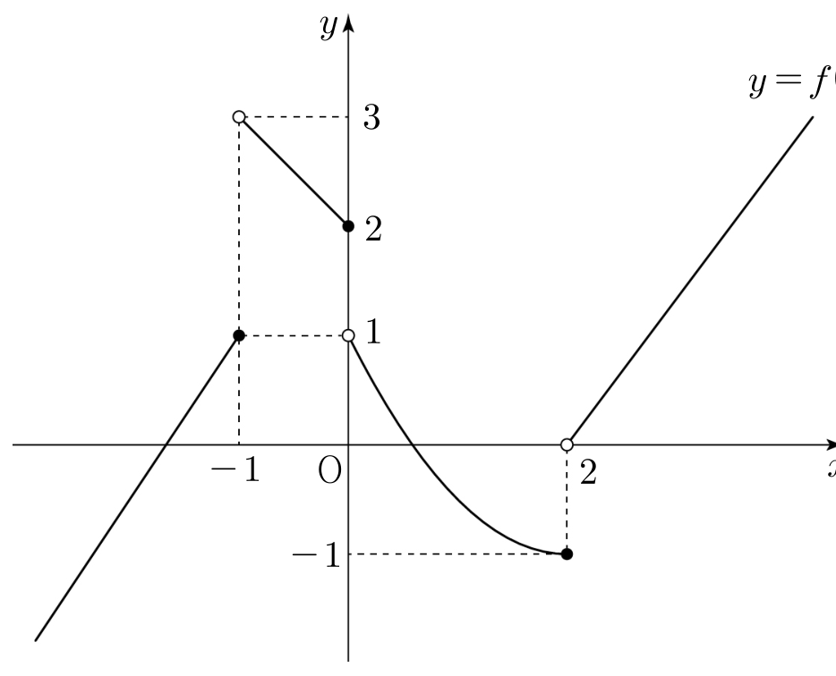
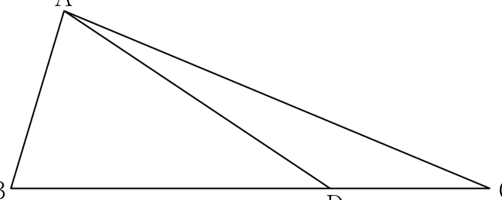
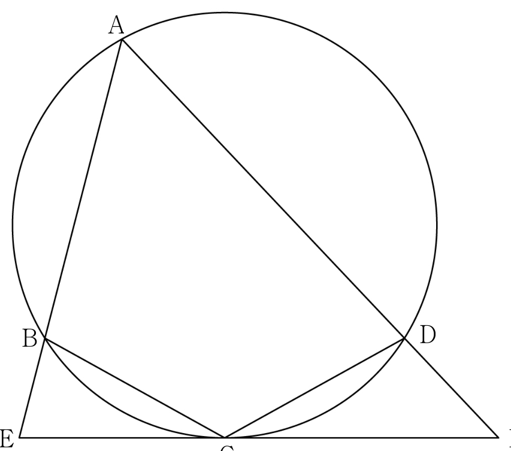

원본 (내부용)함수 \(y=f(x)\)의 그래프가 그림과 같다. \( \lim_{x\to-1+}f(x)+\lim_{x\to2-}f(x) \) 의 값은? [3점]

① \(1\)② \(2\)③ \(3\)④ \(4\)⑤ \(5\)
원본 정답 ②
원본 풀이 (내부용)[출제의도] 함수의 극한 이해하기
\(
\lim_{x\to-1+}f(x)=3,\qquad
\lim_{x\to2-}f(x)=-1
\)
\(
\lim_{x\to-1+}f(x)+\lim_{x\to2-}f(x)
=3+(-1)=2
\)
생성기 숫자판 1/6 · G2f-08#0함수 $y=f\left(x\right)$의 그래프가 그림과 같고, 두 경계의 $x$좌표가 $0$, $3$이며 각 경계의 좌우 극한값이 $(3,1)$, $(-2,0)$이고 채워진 두 점의 함수값이 $3$, $-2$일 때, $\lim_{x\to 0^{+}}f\left(x\right)-\lim_{x\to 3^{-}}f\left(x\right)$의 값으로 옮은 것을 고르세요.
① $1$② $2$③ $3$④ $4$⑤ $5$
정답③ $3$ $x\to 0^{+}$일 때 $f\left(x\right)\to 1$ $x\to 3^{-}$일 때 $f\left(x\right)\to -2$ 따라서 구하는 값은 $1-\left(-2\right)=3$
생성기 숫자판 2/6 · G2f-08#0함수 $y=f\left(x\right)$의 그래프가 그림과 같고, 두 경계의 $x$좌표가 $0$, $3$이며 각 경계의 좌우 극한값이 $(3,2)$, $(-3,0)$이고 채워진 두 점의 함수값이 $3$, $-3$일 때, $\lim_{x\to 0^{+}}f\left(x\right)-\lim_{x\to 3^{-}}f\left(x\right)$의 값으로 옮은 것을 고르세요.
① $3$② $4$③ $5$④ $6$⑤ $7$
정답③ $5$ $x\to 0^{+}$일 때 $f\left(x\right)\to 2$ $x\to 3^{-}$일 때 $f\left(x\right)\to -3$ 따라서 구하는 값은 $2-\left(-3\right)=5$
생성기 숫자판 3/6 · G2f-08#0함수 $y=f\left(x\right)$의 그래프가 그림과 같고, 두 경계의 $x$좌표가 $0$, $1$이며 각 경계의 좌우 극한값이 $(3,2)$, $(-1,0)$이고 채워진 두 점의 함수값이 $3$, $-1$일 때, $\lim_{x\to 0^{-}}f\left(x\right)+\lim_{x\to 1^{-}}f\left(x\right)$의 값으로 옮은 것을 고르세요.
① $0$② $1$③ $2$④ $3$⑤ $4$
정답③ $2$ $x\to 0^{-}$일 때 $f\left(x\right)\to 3$ $x\to 1^{-}$일 때 $f\left(x\right)\to -1$ 따라서 구하는 값은 $3-1=2$
생성기 숫자판 4/6 · G2f-08#0함수 $y=f\left(x\right)$의 그래프가 그림과 같고, 두 경계의 $x$좌표가 $0$, $2$이며 각 경계의 좌우 극한값이 $(3,2)$, $(-2,0)$이고 채워진 두 점의 함수값이 $3$, $-2$일 때, $\lim_{x\to 0^{+}}f\left(x\right)-\lim_{x\to 2^{-}}f\left(x\right)$의 값으로 옮은 것을 고르세요.
① $2$② $3$③ $4$④ $5$⑤ $6$
정답③ $4$ $x\to 0^{+}$일 때 $f\left(x\right)\to 2$ $x\to 2^{-}$일 때 $f\left(x\right)\to -2$ 따라서 구하는 값은 $2-\left(-2\right)=4$
생성기 숫자판 5/6 · G2f-08#0함수 $y=f\left(x\right)$의 그래프가 그림과 같고, 두 경계의 $x$좌표가 $0$, $3$이며 각 경계의 좌우 극한값이 $(2,1)$, $(-3,0)$이고 채워진 두 점의 함수값이 $2$, $-3$일 때, $\lim_{x\to 0^{-}}f\left(x\right)+\lim_{x\to 3^{-}}f\left(x\right)$의 값으로 옮은 것을 고르세요.
① $-3$② $-2$③ $-1$④ $0$⑤ $1$
정답③ $-1$ $x\to 0^{-}$일 때 $f\left(x\right)\to 2$ $x\to 3^{-}$일 때 $f\left(x\right)\to -3$ 따라서 구하는 값은 $2-3=-1$
생성기 숫자판 6/6 · G2f-08#0함수 $y=f\left(x\right)$의 그래프가 그림과 같고, 두 경계의 $x$좌표가 $0$, $2$이며 각 경계의 좌우 극한값이 $(2,1)$, $(-3,0)$이고 채워진 두 점의 함수값이 $2$, $-3$일 때, $\lim_{x\to 0^{-}}f\left(x\right)+\lim_{x\to 2^{+}}f\left(x\right)$의 값으로 옮은 것을 고르세요.
① $0$② $1$③ $2$④ $3$⑤ $4$
정답③ $2$ $x\to 0^{-}$일 때 $f\left(x\right)\to 2$ $x\to 2^{+}$일 때 $f\left(x\right)\to 0$ 따라서 구하는 값은 $2+0=2$
원본 (내부용)양수 \(a\)에 대하여 함수 \(y=\log_2x\)의 그래프와 기울기가 \(2\)인 직선이 두 점 \((a,\log_2a)\), \((a+2,\log_2(a+2))\)에서 만날 때, \(a\)의 값은? [3점]
① \(\frac1{15}\)② \(\frac2{15}\)③ \(\frac15\)④ \(\frac4{15}\)⑤ \(\frac13\)
원본 정답 ②
원본 풀이 (내부용)[출제의도] 로그의 성질 이해하기
두 점 \((a,\log_2a)\), \((a+2,\log_2(a+2))\)를 지나는 직선의 기울기가 2이므로
\(
\frac{\log_2(a+2)-\log_2a}{(a+2)-a}=2
\)
\(
\log_2(a+2)-\log_2a
=\log_2\frac{a+2}{a}=4
\)
\(
\frac{a+2}{a}=2^4,\qquad 15a=2
\)
따라서 \(a=\frac{2}{15}\).
생성기 숫자판 1/6 · G2M9-18#0양수 $a$에 대하여 함수 $y=\log_{2}x$의 그래프와 기울기가 $1$인 직선이 두 점 $\left(a,\ \log_{2}a\right)$, $\left(a+5,\ \log_{2}\left(a+5\right)\right)$에서 만날 때, $a$의 값으로 옳은 것을 고르세요.
① $\frac{5}{32}$② $\frac{5}{31}$③ $\frac{5}{30}$④ $\frac{6}{31}$⑤ $\frac{7}{31}$
정답② $\frac{5}{31}$ 두 점을 지나는 직선의 기울기는 $\frac{\log_{2}\left(a+5\right)-\log_{2}a}{5}=1$ $\log_{2}\frac{a+5}{a}=5$이므로 $\frac{a+5}{a}=2^{5}=32$ $32a=a+5$이므로 $a=\frac{5}{31}$
숫자: 원본 2 2 2 2 2 2 → 쌍둥이 2 1 2 5 2 5 · 같은 수: 2
생성기 숫자판 2/6 · G2M9-18#0양수 $a$에 대하여 함수 $y=\log_{2}x$의 그래프와 기울기가 $3$인 직선이 두 점 $\left(a,\ \log_{2}a\right)$, $\left(a+1,\ \log_{2}\left(a+1\right)\right)$에서 만날 때, $a$의 값으로 옳은 것을 고르세요.
① $\frac{1}{8}$② $\frac{1}{7}$③ $\frac{1}{6}$④ $\frac{2}{7}$⑤ $\frac{3}{7}$
정답② $\frac{1}{7}$ 두 점을 지나는 직선의 기울기는 $\frac{\log_{2}\left(a+1\right)-\log_{2}a}{1}=3$ $\log_{2}\frac{a+1}{a}=3$이므로 $\frac{a+1}{a}=2^{3}=8$ $8a=a+1$이므로 $a=\frac{1}{7}$
숫자: 원본 2 2 2 2 2 2 → 쌍둥이 2 3 2 1 2 1 · 같은 수: 2
생성기 숫자판 3/6 · G2M9-18#0양수 $a$에 대하여 함수 $y=\log_{2}x$의 그래프와 기울기가 $1$인 직선이 두 점 $\left(a,\ \log_{2}a\right)$, $\left(a+9,\ \log_{2}\left(a+9\right)\right)$에서 만날 때, $a$의 값으로 옳은 것을 고르세요.
① $\frac{9}{512}$② $\frac{9}{511}$③ $\frac{9}{510}$④ $\frac{10}{511}$⑤ $\frac{11}{511}$
정답② $\frac{9}{511}$ 두 점을 지나는 직선의 기울기는 $\frac{\log_{2}\left(a+9\right)-\log_{2}a}{9}=1$ $\log_{2}\frac{a+9}{a}=9$이므로 $\frac{a+9}{a}=2^{9}=512$ $512a=a+9$이므로 $a=\frac{9}{511}$
숫자: 원본 2 2 2 2 2 2 → 쌍둥이 2 1 2 9 2 9 · 같은 수: 2
생성기 숫자판 4/6 · G2M9-18#0양수 $a$에 대하여 함수 $y=\log_{2}x$의 그래프와 기울기가 $1$인 직선이 두 점 $\left(a,\ \log_{2}a\right)$, $\left(a+7,\ \log_{2}\left(a+7\right)\right)$에서 만날 때, $a$의 값으로 옳은 것을 고르세요.
① $\frac{7}{128}$② $\frac{7}{127}$③ $\frac{7}{126}$④ $\frac{8}{127}$⑤ $\frac{9}{127}$
정답② $\frac{7}{127}$ 두 점을 지나는 직선의 기울기는 $\frac{\log_{2}\left(a+7\right)-\log_{2}a}{7}=1$ $\log_{2}\frac{a+7}{a}=7$이므로 $\frac{a+7}{a}=2^{7}=128$ $128a=a+7$이므로 $a=\frac{7}{127}$
숫자: 원본 2 2 2 2 2 2 → 쌍둥이 2 1 2 7 2 7 · 같은 수: 2
생성기 숫자판 5/6 · G2M9-18#0양수 $a$에 대하여 함수 $y=\log_{2}x$의 그래프와 기울기가 $8$인 직선이 두 점 $\left(a,\ \log_{2}a\right)$, $\left(a+1,\ \log_{2}\left(a+1\right)\right)$에서 만날 때, $a$의 값으로 옳은 것을 고르세요.
① $\frac{1}{256}$② $\frac{1}{255}$③ $\frac{1}{254}$④ $\frac{2}{255}$⑤ $\frac{3}{255}$
정답② $\frac{1}{255}$ 두 점을 지나는 직선의 기울기는 $\frac{\log_{2}\left(a+1\right)-\log_{2}a}{1}=8$ $\log_{2}\frac{a+1}{a}=8$이므로 $\frac{a+1}{a}=2^{8}=256$ $256a=a+1$이므로 $a=\frac{1}{255}$
숫자: 원본 2 2 2 2 2 2 → 쌍둥이 2 8 2 1 2 1 · 같은 수: 2
생성기 숫자판 6/6 · G2M9-18#0양수 $a$에 대하여 함수 $y=\log_{2}x$의 그래프와 기울기가 $10$인 직선이 두 점 $\left(a,\ \log_{2}a\right)$, $\left(a+1,\ \log_{2}\left(a+1\right)\right)$에서 만날 때, $a$의 값으로 옳은 것을 고르세요.
① $\frac{1}{1024}$② $\frac{1}{1023}$③ $\frac{1}{1022}$④ $\frac{2}{1023}$⑤ $\frac{3}{1023}$
정답② $\frac{1}{1023}$ 두 점을 지나는 직선의 기울기는 $\frac{\log_{2}\left(a+1\right)-\log_{2}a}{1}=10$ $\log_{2}\frac{a+1}{a}=10$이므로 $\frac{a+1}{a}=2^{10}=1024$ $1024a=a+1$이므로 $a=\frac{1}{1023}$
숫자: 원본 2 2 2 2 2 2 → 쌍둥이 2 10 2 1 2 1 · 같은 수: 2
8. 2026년 9월 8번 · 3점 · 수학Ⅰ 수열 · G2M9-18#1
원본 (내부용)등차수열 \(\{a_n\}\)의 첫째항부터 제 \(n\)항까지의 합을 \(S_n\)이라 하자. \(a_4=6,\ S_4=S_6\)일 때, \(a_1\)의 값은? [3점]
생성기 숫자판 1/5 · G2M9-18#1등차수열 $\left\{a_{n}\right\}$의 첫째항부터 제$n$항까지의 합을 $S_{n}$이라 합시다. $a_{2}=5,\ S_{3}=S_{5}$일 때, $a_{1}$의 값으로 옳은 것을 고르세요.
① $-1$② $1$③ $3$④ $5$⑤ $7$
정답⑤ $7$ $S_{3}=S_{5}$에서 $S_{5}-S_{3}=a_{4}+a_{5}=0$ 공차를 $d$라 하면 $2a_{1}+7d=0$, $a_{1}+d=5$ 두 식을 연립하면 $d=-2$, $a_{1}=7$
숫자: 원본 4 6 4 6 1 → 쌍둥이 2 5 3 5 1 · 같은 수: 1
생성기 숫자판 2/5 · G2M9-18#1등차수열 $\left\{a_{n}\right\}$의 첫째항부터 제$n$항까지의 합을 $S_{n}$이라 합시다. $a_{4}=5,\ S_{5}=S_{7}$일 때, $a_{1}$의 값으로 옳은 것을 고르세요.
① $3$② $5$③ $7$④ $9$⑤ $11$
정답⑤ $11$ $S_{5}=S_{7}$에서 $S_{7}-S_{5}=a_{6}+a_{7}=0$ 공차를 $d$라 하면 $2a_{1}+11d=0$, $a_{1}+3d=5$ 두 식을 연립하면 $d=-2$, $a_{1}=11$
숫자: 원본 4 6 4 6 1 → 쌍둥이 4 5 5 7 1 · 같은 수: 1 4
생성기 숫자판 3/5 · G2M9-18#1등차수열 $\left\{a_{n}\right\}$의 첫째항부터 제$n$항까지의 합을 $S_{n}$이라 합시다. $a_{5}=2,\ S_{4}=S_{6}$일 때, $a_{1}$의 값으로 옳은 것을 고르세요.
① $14$② $16$③ $18$④ $20$⑤ $22$
정답③ $18$ $S_{4}=S_{6}$에서 $S_{6}-S_{4}=a_{5}+a_{6}=0$ 공차를 $d$라 하면 $2a_{1}+9d=0$, $a_{1}+4d=2$ 두 식을 연립하면 $d=-4$, $a_{1}=18$
숫자: 원본 4 6 4 6 1 → 쌍둥이 5 2 4 6 1 · 같은 수: 1 4 6
생성기 숫자판 4/5 · G2M9-18#1등차수열 $\left\{a_{n}\right\}$의 첫째항부터 제$n$항까지의 합을 $S_{n}$이라 합시다. $a_{3}=5,\ S_{4}=S_{6}$일 때, $a_{1}$의 값으로 옳은 것을 고르세요.
① $3$② $5$③ $7$④ $9$⑤ $11$
정답④ $9$ $S_{4}=S_{6}$에서 $S_{6}-S_{4}=a_{5}+a_{6}=0$ 공차를 $d$라 하면 $2a_{1}+9d=0$, $a_{1}+2d=5$ 두 식을 연립하면 $d=-2$, $a_{1}=9$
숫자: 원본 4 6 4 6 1 → 쌍둥이 3 5 4 6 1 · 같은 수: 1 4 6
생성기 숫자판 5/5 · G2M9-18#1등차수열 $\left\{a_{n}\right\}$의 첫째항부터 제$n$항까지의 합을 $S_{n}$이라 합시다. $a_{2}=7,\ S_{4}=S_{6}$일 때, $a_{1}$의 값으로 옳은 것을 고르세요.
① $9$② $11$③ $13$④ $15$⑤ $17$
정답① $9$ $S_{4}=S_{6}$에서 $S_{6}-S_{4}=a_{5}+a_{6}=0$ 공차를 $d$라 하면 $2a_{1}+9d=0$, $a_{1}+d=7$ 두 식을 연립하면 $d=-2$, $a_{1}=9$
숫자: 원본 4 6 4 6 1 → 쌍둥이 2 7 4 6 1 · 같은 수: 1 4 6
9. 2026년 9월 9번 · 3점 · 수학Ⅰ 지수·로그 · G2M9-18#2
원본 (내부용)\(1\)보다 큰 두 실수 \(a,b\)가 \( \log_5a\times\log_b5=2,\qquad \log_4a=\log_4(b+4)+\log_ab \) 를 만족시킬 때, \(a+b\)의 값은? [3점]
① \(20\)② \(25\)③ \(30\)④ \(35\)⑤ \(40\)
원본 정답 ①
원본 풀이 (내부용)[출제의도] 로그의 성질 이해하기
\(
\log_5a\times\log_b5
=\log_ba=2
\)
이므로
\(
a=b^2\qquad\cdots\text{①}
\)
\(
\log_ab=\frac1{\log_ba}=\frac12
\)
이므로
\(
\log_4a=\log_4(b+4)+\log_ab
\)
에서
\(
\log_4a-\log_4(b+4)
=\log_4\frac{a}{b+4}=\frac12
\)
\(
\frac{a}{b+4}=4^{\frac12}=2,\qquad
a=2b+8\qquad\cdots\text{②}
\)
①, ②에 의하여
\(
b^2=2b+8,\quad
b^2-2b-8=0,\quad
(b+2)(b-4)=0
\)
\(b=-2\) 또는 \(b=4\). \(b>1\)이므로 \(b=4,\ a=16\).
따라서 \(a+b=20\).
생성기 숫자판 1/6 · G2M9-18#2$1$보다 큰 두 실수 $a$, $b$가 $\log_{5}a\times\log_{b}5=2,\ \log_{4}a=\log_{4}\left(b+24\right)+\log_{a}b$를 만족시킬 때, $a+b$의 값으로 옳은 것을 고르세요.
생성기 숫자판 2/6 · G2M9-18#2$1$보다 큰 두 실수 $a$, $b$가 $\log_{5}a\times\log_{b}5=2,\ \log_{4}a=\log_{4}\left(b+480\right)+\log_{a}b$를 만족시킬 때, $a+b$의 값으로 옳은 것을 고르세요.
생성기 숫자판 3/6 · G2M9-18#2$1$보다 큰 두 실수 $a$, $b$가 $\log_{5}a\times\log_{b}5=2,\ \log_{4}a=\log_{4}\left(b+\frac{99}{2}\right)+\log_{a}b$를 만족시킬 때, $a+b$의 값으로 옳은 것을 고르세요.
생성기 숫자판 4/6 · G2M9-18#2$1$보다 큰 두 실수 $a$, $b$가 $\log_{5}a\times\log_{b}5=2,\ \log_{4}a=\log_{4}\left(b+\frac{675}{2}\right)+\log_{a}b$를 만족시킬 때, $a+b$의 값으로 옳은 것을 고르세요.
생성기 숫자판 5/6 · G2M9-18#2$1$보다 큰 두 실수 $a$, $b$가 $\log_{5}a\times\log_{b}5=2,\ \log_{4}a=\log_{4}\left(b+420\right)+\log_{a}b$를 만족시킬 때, $a+b$의 값으로 옳은 것을 고르세요.
생성기 숫자판 6/6 · G2M9-18#2$1$보다 큰 두 실수 $a$, $b$가 $\log_{5}a\times\log_{b}5=2,\ \log_{4}a=\log_{4}\left(b+\frac{143}{2}\right)+\log_{a}b$를 만족시킬 때, $a+b$의 값으로 옳은 것을 고르세요.
원본 (내부용)반지름의 길이가 \(5\)인 원에 내접하는 삼각형 \(ABC\)에 대하여 \( \frac{\sin A}{\sin B}=\frac34 \quad\text{이고}\quad \sin^2A+\sin^2B=\sin^2C \) 일 때, 삼각형 \(ABC\)의 넓이는? [3점]
① \(20\)② \(22\)③ \(24\)④ \(26\)⑤ \(28\)
원본 정답 ③
원본 풀이 (내부용)[출제의도] 사인법칙을 활용하여 문제 해결하기
\(\overline{BC}=a,\ \overline{AC}=b,\ \overline{AB}=c\)라 하면 사인법칙에 의하여
\(
\frac{a}{\sin A}=\frac{b}{\sin B}=\frac{c}{\sin C}=2\times5=10
\)
\(
\sin A=\frac a{10},\qquad
\sin B=\frac b{10},\qquad
\sin C=\frac c{10}
\)
\(
\frac{\sin A}{\sin B}
=\frac{a/10}{b/10}
=\frac ab=\frac34
\)
이므로 \(a=3k,\ b=4k\ (k>0)\)라 하자.
\(
\sin^2A+\sin^2B=\sin^2C
\)
에서
\(
\left(\frac a{10}\right)^2+
\left(\frac b{10}\right)^2=
\left(\frac c{10}\right)^2
\)
이므로 \(a^2+b^2=c^2=25k^2,\ c=5k\).
삼각형 \(ABC\)는 \(\angle C=90^\circ\)인 직각삼각형이고, 직각삼각형 \(ABC\)의 빗변의 길이 \(c\)는 외접원의 지름의 길이와 같으므로 \(c=5k=10,\ k=2\). 따라서 \(a=6,\ b=8\).
따라서 삼각형 \(ABC\)의 넓이는
\(
\frac12\times6\times8=24
\)
생성기 숫자판 1/5 · G2M9-18#3반지름의 길이가 $13$인 원에 내접하는 삼각형 $\mathrm{ABC}$에 대하여 $\frac{\sin A}{\sin B}=\frac{5}{12}$이고 $\sin^{2}A+\sin^{2}B=\sin^{2}C$일 때, 삼각형 $\mathrm{ABC}$의 넓이로 옳은 것을 고르세요.
① $120$② $122$③ $124$④ $126$⑤ $128$
정답① $120$ 사인법칙에 의하여 $a:b:c=\sin A:\sin B:\sin C$이므로 $\sin^{2}A+\sin^{2}B=\sin^{2}C$에서 $a^{2}+b^{2}=c^{2}$, 곧 $C=\frac{\pi}{2}$ $c=2R=26$이고 $a:b=5:12$이므로 $a=10$, $b=24$ 따라서 삼각형 $\mathrm{ABC}$의 넓이는 $\frac{1}{2}\times 10\times 24=120$
숫자: 원본 5 34 → 쌍둥이 13 5 12 · 같은 수: 5
생성기 숫자판 2/5 · G2M9-18#3반지름의 길이가 $5$인 원에 내접하는 삼각형 $\mathrm{ABC}$에 대하여 $\frac{\sin A}{\sin B}=\frac{4}{3}$이고 $\sin^{2}A+\sin^{2}B=\sin^{2}C$일 때, 삼각형 $\mathrm{ABC}$의 넓이로 옳은 것을 고르세요.
① $22$② $24$③ $26$④ $28$⑤ $30$
정답② $24$ 사인법칙에 의하여 $a:b:c=\sin A:\sin B:\sin C$이므로 $\sin^{2}A+\sin^{2}B=\sin^{2}C$에서 $a^{2}+b^{2}=c^{2}$, 곧 $C=\frac{\pi}{2}$ $c=2R=10$이고 $a:b=4:3$이므로 $a=8$, $b=6$ 따라서 삼각형 $\mathrm{ABC}$의 넓이는 $\frac{1}{2}\times 8\times 6=24$
숫자: 원본 5 34 → 쌍둥이 5 4 3 · 같은 수: 5
생성기 숫자판 3/5 · G2M9-18#3반지름의 길이가 $10$인 원에 내접하는 삼각형 $\mathrm{ABC}$에 대하여 $\frac{\sin A}{\sin B}=\frac{3}{4}$이고 $\sin^{2}A+\sin^{2}B=\sin^{2}C$일 때, 삼각형 $\mathrm{ABC}$의 넓이로 옳은 것을 고르세요.
① $88$② $90$③ $92$④ $94$⑤ $96$
정답⑤ $96$ 사인법칙에 의하여 $a:b:c=\sin A:\sin B:\sin C$이므로 $\sin^{2}A+\sin^{2}B=\sin^{2}C$에서 $a^{2}+b^{2}=c^{2}$, 곧 $C=\frac{\pi}{2}$ $c=2R=20$이고 $a:b=3:4$이므로 $a=12$, $b=16$ 따라서 삼각형 $\mathrm{ABC}$의 넓이는 $\frac{1}{2}\times 12\times 16=96$
숫자: 원본 5 34 → 쌍둥이 10 3 4
생성기 숫자판 4/5 · G2M9-18#3반지름의 길이가 $13$인 원에 내접하는 삼각형 $\mathrm{ABC}$에 대하여 $\frac{\sin A}{\sin B}=\frac{12}{5}$이고 $\sin^{2}A+\sin^{2}B=\sin^{2}C$일 때, 삼각형 $\mathrm{ABC}$의 넓이로 옳은 것을 고르세요.
① $112$② $114$③ $116$④ $118$⑤ $120$
정답⑤ $120$ 사인법칙에 의하여 $a:b:c=\sin A:\sin B:\sin C$이므로 $\sin^{2}A+\sin^{2}B=\sin^{2}C$에서 $a^{2}+b^{2}=c^{2}$, 곧 $C=\frac{\pi}{2}$ $c=2R=26$이고 $a:b=12:5$이므로 $a=24$, $b=10$ 따라서 삼각형 $\mathrm{ABC}$의 넓이는 $\frac{1}{2}\times 24\times 10=120$
숫자: 원본 5 34 → 쌍둥이 13 12 5 · 같은 수: 5
생성기 숫자판 5/5 · G2M9-18#3반지름의 길이가 $26$인 원에 내접하는 삼각형 $\mathrm{ABC}$에 대하여 $\frac{\sin A}{\sin B}=\frac{12}{5}$이고 $\sin^{2}A+\sin^{2}B=\sin^{2}C$일 때, 삼각형 $\mathrm{ABC}$의 넓이로 옳은 것을 고르세요.
① $478$② $480$③ $482$④ $484$⑤ $486$
정답② $480$ 사인법칙에 의하여 $a:b:c=\sin A:\sin B:\sin C$이므로 $\sin^{2}A+\sin^{2}B=\sin^{2}C$에서 $a^{2}+b^{2}=c^{2}$, 곧 $C=\frac{\pi}{2}$ $c=2R=52$이고 $a:b=12:5$이므로 $a=48$, $b=20$ 따라서 삼각형 $\mathrm{ABC}$의 넓이는 $\frac{1}{2}\times 48\times 20=480$
숫자: 원본 5 34 → 쌍둥이 26 12 5 · 같은 수: 5
11. 2026년 9월 11번 · 3점 · 수학Ⅰ 삼각함수 · G2M9-18#4
원본 (내부용)\(0<a<1\)인 실수 \(a\)에 대하여 함수 \(y=2^x-a\)의 그래프가 \(x\)축과 만나는 점을 \(A\), \(y\)축과 만나는 점을 \(B\)라 하자. 직선 \(x=2\)가 함수 \(y=2^x-a\)의 그래프와 만나는 점을 \(C\), \(x\)축과 만나는 점을 \(D\)라 할 때, 삼각형 \(CBD\)의 넓이가 \(\frac72\)이다. 삼각형 \(BAD\)의 넓이는? [3점]
① \(\frac9{16}\)② \(\frac58\)③ \(\frac{11}{16}\)④ \(\frac34\)⑤ \(\frac{13}{16}\)
원본 정답 ④
원본 풀이 (내부용)[출제의도] 지수함수의 그래프를 활용하여 문제 해결하기
\(C(2,4-a),\ D(2,0)\)이므로 \(\overline{CD}=4-a\).
삼각형 \(CBD\)의 넓이는
\(
\frac12\times(4-a)\times2=4-a=\frac72,\qquad a=\frac12
\)
점 \(B\)의 좌표는 \(\left(0,\frac12\right)\).
점 \(A\)의 좌표를 \((b,0)\)이라 하면
\(
0=2^b-\frac12,\qquad 2^b=\frac12=2^{-1},\qquad b=-1
\)
\(A(-1,0)\)이므로 \(\overline{AD}=3\).
따라서 삼각형 \(BAD\)의 넓이는
\(
\frac12\times3\times\frac12=\frac34
\)
생성기 숫자판 1/6 · G2M9-18#4$0<a<1$인 실수 $a$에 대하여 함수 $y=2^{x}-a$의 그래프가 $x$축과 만나는 점을 $\mathrm{A}$, $y$축과 만나는 점을 $\mathrm{B}$라 합시다. 직선 $x=9$가 함수 $y=2^{x}-a$의 그래프와 만나는 점을 $\mathrm{C}$, $x$축과 만나는 점을 $\mathrm{D}$라 할 때, 삼각형 $\mathrm{CBD}$의 넓이가 $\frac{36855}{16}$입니다. 삼각형 $\mathrm{BAD}$의 넓이로 옳은 것을 고르세요.
① $\frac{21}{8}$② $\frac{21}{4}$③ $\frac{11}{2}$④ $\frac{23}{4}$⑤ $\frac{25}{4}$
정답② $\frac{21}{4}$ $\frac12\cdot 9\cdot\left(2^{9}-a\right)=\frac{36855}{16}$, so $a=\frac{1}{8}$ $A=(-3,0)$, $B=(0,1-a)$, $D=(9,0)$; $[BAD]=\frac12(9+3)(1-a)=\frac{21}{4}$
생성기 숫자판 2/6 · G2M9-18#4$0<a<1$인 실수 $a$에 대하여 함수 $y=2^{x}-a$의 그래프가 $x$축과 만나는 점을 $\mathrm{A}$, $y$축과 만나는 점을 $\mathrm{B}$라 합시다. 직선 $x=14$가 함수 $y=2^{x}-a$의 그래프와 만나는 점을 $\mathrm{C}$, $x$축과 만나는 점을 $\mathrm{D}$라 할 때, 삼각형 $\mathrm{CBD}$의 넓이가 $\frac{1835001}{16}$입니다. 삼각형 $\mathrm{BAD}$의 넓이로 옳은 것을 고르세요.
① $\frac{135}{32}$② $\frac{135}{16}$③ $\frac{139}{16}$④ $\frac{143}{16}$⑤ $\frac{151}{16}$
정답② $\frac{135}{16}$ $\frac12\cdot 14\cdot\left(2^{14}-a\right)=\frac{1835001}{16}$, so $a=\frac{1}{16}$ $A=(-4,0)$, $B=(0,1-a)$, $D=(14,0)$; $[BAD]=\frac12(14+4)(1-a)=\frac{135}{16}$
생성기 숫자판 3/6 · G2M9-18#4$0<a<1$인 실수 $a$에 대하여 함수 $y=2^{x}-a$의 그래프가 $x$축과 만나는 점을 $\mathrm{A}$, $y$축과 만나는 점을 $\mathrm{B}$라 합시다. 직선 $x=10$이 함수 $y=2^{x}-a$의 그래프와 만나는 점을 $\mathrm{C}$, $x$축과 만나는 점을 $\mathrm{D}$라 할 때, 삼각형 $\mathrm{CBD}$의 넓이가 $\frac{81915}{16}$입니다. 삼각형 $\mathrm{BAD}$의 넓이로 옳은 것을 고르세요.
① $\frac{105}{32}$② $\frac{105}{16}$③ $\frac{109}{16}$④ $\frac{113}{16}$⑤ $\frac{121}{16}$
정답② $\frac{105}{16}$ $\frac12\cdot 10\cdot\left(2^{10}-a\right)=\frac{81915}{16}$, so $a=\frac{1}{16}$ $A=(-4,0)$, $B=(0,1-a)$, $D=(10,0)$; $[BAD]=\frac12(10+4)(1-a)=\frac{105}{16}$
생성기 숫자판 4/6 · G2M9-18#4$0<a<1$인 실수 $a$에 대하여 함수 $y=2^{x}-a$의 그래프가 $x$축과 만나는 점을 $\mathrm{A}$, $y$축과 만나는 점을 $\mathrm{B}$라 합시다. 직선 $x=17$이 함수 $y=2^{x}-a$의 그래프와 만나는 점을 $\mathrm{C}$, $x$축과 만나는 점을 $\mathrm{D}$라 할 때, 삼각형 $\mathrm{CBD}$의 넓이가 $\frac{17825775}{16}$입니다. 삼각형 $\mathrm{BAD}$의 넓이로 옳은 것을 고르세요.
① $\frac{35}{8}$② $\frac{35}{4}$③ $9$④ $\frac{37}{4}$⑤ $\frac{39}{4}$
정답② $\frac{35}{4}$ $\frac12\cdot 17\cdot\left(2^{17}-a\right)=\frac{17825775}{16}$, so $a=\frac{1}{8}$ $A=(-3,0)$, $B=(0,1-a)$, $D=(17,0)$; $[BAD]=\frac12(17+3)(1-a)=\frac{35}{4}$
생성기 숫자판 5/6 · G2M9-18#4$0<a<1$인 실수 $a$에 대하여 함수 $y=2^{x}-a$의 그래프가 $x$축과 만나는 점을 $\mathrm{A}$, $y$축과 만나는 점을 $\mathrm{B}$라 합시다. 직선 $x=5$가 함수 $y=2^{x}-a$의 그래프와 만나는 점을 $\mathrm{C}$, $x$축과 만나는 점을 $\mathrm{D}$라 할 때, 삼각형 $\mathrm{CBD}$의 넓이가 $\frac{1275}{16}$입니다. 삼각형 $\mathrm{BAD}$의 넓이로 옳은 것을 고르세요.
① $\frac{7}{4}$② $\frac{7}{2}$③ $\frac{15}{4}$④ $4$⑤ $\frac{9}{2}$
정답② $\frac{7}{2}$ $\frac12\cdot 5\cdot\left(2^{5}-a\right)=\frac{1275}{16}$, so $a=\frac{1}{8}$ $A=(-3,0)$, $B=(0,1-a)$, $D=(5,0)$; $[BAD]=\frac12(5+3)(1-a)=\frac{7}{2}$
생성기 숫자판 6/6 · G2M9-18#4$0<a<1$인 실수 $a$에 대하여 함수 $y=2^{x}-a$의 그래프가 $x$축과 만나는 점을 $\mathrm{A}$, $y$축과 만나는 점을 $\mathrm{B}$라 합시다. 직선 $x=11$이 함수 $y=2^{x}-a$의 그래프와 만나는 점을 $\mathrm{C}$, $x$축과 만나는 점을 $\mathrm{D}$라 할 때, 삼각형 $\mathrm{CBD}$의 넓이가 $\frac{45045}{4}$입니다. 삼각형 $\mathrm{BAD}$의 넓이로 옳은 것을 고르세요.
① $\frac{3}{2}$② $3$③ $\frac{13}{4}$④ $\frac{7}{2}$⑤ $4$
정답② $3$ $\frac12\cdot 11\cdot\left(2^{11}-a\right)=\frac{45045}{4}$, so $a=\frac{1}{2}$ $A=(-1,0)$, $B=(0,1-a)$, $D=(11,0)$; $[BAD]=\frac12(11+1)(1-a)=3$
원본 (내부용)\(2\le n\le100\)인 자연수 \(n\)에 대하여 \( \log_2 n+\frac{1}{\log_n4} \) 의 값이 자연수가 되도록 하는 모든 \(n\)의 값의 합은? [3점]
① \(66\)② \(72\)③ \(78\)④ \(84\)⑤ \(90\)
원본 정답 ④
원본 풀이 (내부용)[출제의도] 로그의 성질 이해하기
\(
\log_2n+\frac1{\log_n4}
=\log_2n+\log_4n
=\frac32\log_2n
\)
\(\frac32\log_2n=k\ (k\text{는 자연수})\)라 하면
\(
\log_2n=\frac{2k}{3},\qquad n=2^{\frac{2k}{3}}
\)
\(n\)이 자연수이므로 \(k\)는 3의 배수이다. \(2\le n\le100\)인 모든 \(n\)은 \(2^2,2^4,2^6\).
따라서 \(4+16+64=84\).
생성기 숫자판 1/6 · G2M9-18#5$2\le n\le 500$인 자연수 $n$에 대하여 $\log_{3}n+\frac{1}{\log_{n}27}$의 값이 자연수가 되도록 하는 모든 $n$의 값의 합으로 옳은 것을 고르세요.
① $15$② $21$③ $27$④ $33$⑤ $39$
정답③ $27$ $\frac{1}{\log_n 27}=\log_{27}n=\frac{1}{3}\log_{3}n,\quad \log_{3}n+\frac{1}{\log_n 27}=\frac{4}{3}\log_{3}n$ $\frac{4}{3}\log_{3}n$이 자연수일 때 이를 $k$라 두면 $\log_{3}n=\frac{3k}{3+1}$. $3$이 소수이고 $n$이 자연수이므로 이 지수는 정수이며, $3$과 $3+1$은 서로소이므로 $\log_{3}n$은 $3$의 배수이다. 따라서 $n=3^{3}$. 따라서 모든 $n$의 값의 합은 $27$.
숫자: 원본 2 100 2 1 4 → 쌍둥이 2 500 3 1 27 · 같은 수: 1 2
생성기 숫자판 2/6 · G2M9-18#5$2\le n\le 400$인 자연수 $n$에 대하여 $\log_{3}n+\frac{1}{\log_{n}27}$의 값이 자연수가 되도록 하는 모든 $n$의 값의 합으로 옳은 것을 고르세요.
① $15$② $21$③ $27$④ $33$⑤ $39$
정답③ $27$ $\frac{1}{\log_n 27}=\log_{27}n=\frac{1}{3}\log_{3}n,\quad \log_{3}n+\frac{1}{\log_n 27}=\frac{4}{3}\log_{3}n$ $\frac{4}{3}\log_{3}n$이 자연수일 때 이를 $k$라 두면 $\log_{3}n=\frac{3k}{3+1}$. $3$이 소수이고 $n$이 자연수이므로 이 지수는 정수이며, $3$과 $3+1$은 서로소이므로 $\log_{3}n$은 $3$의 배수이다. 따라서 $n=3^{3}$. 따라서 모든 $n$의 값의 합은 $27$.
숫자: 원본 2 100 2 1 4 → 쌍둥이 2 400 3 1 27 · 같은 수: 1 2
생성기 숫자판 3/6 · G2M9-18#5$2\le n\le 500$인 자연수 $n$에 대하여 $\log_{3}n+\frac{1}{\log_{n}9}$의 값이 자연수가 되도록 하는 모든 $n$의 값의 합으로 옳은 것을 고르세요.
① $78$② $84$③ $90$④ $96$⑤ $102$
정답③ $90$ $\frac{1}{\log_n 9}=\log_{9}n=\frac{1}{2}\log_{3}n,\quad \log_{3}n+\frac{1}{\log_n 9}=\frac{3}{2}\log_{3}n$ $\frac{3}{2}\log_{3}n$이 자연수일 때 이를 $k$라 두면 $\log_{3}n=\frac{2k}{2+1}$. $3$이 소수이고 $n$이 자연수이므로 이 지수는 정수이며, $2$와 $2+1$은 서로소이므로 $\log_{3}n$은 $2$의 배수이다. 따라서 $n=3^{2}, 3^{4}$. 따라서 모든 $n$의 값의 합은 $90$.
숫자: 원본 2 100 2 1 4 → 쌍둥이 2 500 3 1 9 · 같은 수: 1 2
생성기 숫자판 4/6 · G2M9-18#5$2\le n\le 500$인 자연수 $n$에 대하여 $\log_{7}n+\frac{1}{\log_{n}343}$의 값이 자연수가 되도록 하는 모든 $n$의 값의 합으로 옳은 것을 고르세요.
① $331$② $337$③ $343$④ $349$⑤ $355$
정답③ $343$ $\frac{1}{\log_n 343}=\log_{343}n=\frac{1}{3}\log_{7}n,\quad \log_{7}n+\frac{1}{\log_n 343}=\frac{4}{3}\log_{7}n$ $\frac{4}{3}\log_{7}n$이 자연수일 때 이를 $k$라 두면 $\log_{7}n=\frac{3k}{3+1}$. $7$이 소수이고 $n$이 자연수이므로 이 지수는 정수이며, $3$과 $3+1$은 서로소이므로 $\log_{7}n$은 $3$의 배수이다. 따라서 $n=7^{3}$. 따라서 모든 $n$의 값의 합은 $343$.
숫자: 원본 2 100 2 1 4 → 쌍둥이 2 500 7 1 343 · 같은 수: 1 2
생성기 숫자판 5/6 · G2M9-18#5$2\le n\le 500$인 자연수 $n$에 대하여 $\log_{5}n+\frac{1}{\log_{n}125}$의 값이 자연수가 되도록 하는 모든 $n$의 값의 합으로 옳은 것을 고르세요.
① $113$② $119$③ $125$④ $131$⑤ $137$
정답③ $125$ $\frac{1}{\log_n 125}=\log_{125}n=\frac{1}{3}\log_{5}n,\quad \log_{5}n+\frac{1}{\log_n 125}=\frac{4}{3}\log_{5}n$ $\frac{4}{3}\log_{5}n$이 자연수일 때 이를 $k$라 두면 $\log_{5}n=\frac{3k}{3+1}$. $5$가 소수이고 $n$이 자연수이므로 이 지수는 정수이며, $3$과 $3+1$은 서로소이므로 $\log_{5}n$은 $3$의 배수이다. 따라서 $n=5^{3}$. 따라서 모든 $n$의 값의 합은 $125$.
숫자: 원본 2 100 2 1 4 → 쌍둥이 2 500 5 1 125 · 같은 수: 1 2
생성기 숫자판 6/6 · G2M9-18#5$2\le n\le 700$인 자연수 $n$에 대하여 $\log_{5}n+\frac{1}{\log_{n}125}$의 값이 자연수가 되도록 하는 모든 $n$의 값의 합으로 옳은 것을 고르세요.
① $113$② $119$③ $125$④ $131$⑤ $137$
정답③ $125$ $\frac{1}{\log_n 125}=\log_{125}n=\frac{1}{3}\log_{5}n,\quad \log_{5}n+\frac{1}{\log_n 125}=\frac{4}{3}\log_{5}n$ $\frac{4}{3}\log_{5}n$이 자연수일 때 이를 $k$라 두면 $\log_{5}n=\frac{3k}{3+1}$. $5$가 소수이고 $n$이 자연수이므로 이 지수는 정수이며, $3$과 $3+1$은 서로소이므로 $\log_{5}n$은 $3$의 배수이다. 따라서 $n=5^{3}$. 따라서 모든 $n$의 값의 합은 $125$.
숫자: 원본 2 100 2 1 4 → 쌍둥이 2 700 5 1 125 · 같은 수: 1 2
13. 2026년 9월 13번 · 3점 · 수학Ⅰ 삼각함수 · G2M9-18#6
원본 (내부용)그림과 같이 \(\overline{AB}=2,\ \overline{AC}=5\)인 예각삼각형 \(ABC\)에 대하여 선분 \(BC\)를 \(2:1\)로 내분하는 점을 \(D\)라 하자. \(\overline{AD}=2\sqrt3\)일 때, \(\cos(\angle ABC)\)의 값은? [3점]

① \(\frac{\sqrt3}{18}\)② \(\frac{\sqrt3}{9}\)③ \(\frac{\sqrt3}{6}\)④ \(\frac{2\sqrt3}{9}\)⑤ \(\frac{5\sqrt3}{18}\)
원본 정답 ③
원본 풀이 (내부용)[출제의도] 코사인법칙을 활용하여 삼각함수 계산하기
\(\overline{BD}=2k,\ \overline{DC}=k\ (k>0)\)라 하면, 두 삼각형 \(ABC\)와 \(ABD\)에서 코사인법칙에 의하여
\(
\cos(\angle ABC)
=\frac{2^2+(3k)^2-5^2}{2\times2\times3k}
=\frac{3k^2-7}{4k}
\)
\(
\cos(\angle ABD)
=\frac{2^2+(2k)^2-(2\sqrt3)^2}{2\times2\times2k}
=\frac{k^2-2}{2k}
\)
\(
\cos(\angle ABC)=\cos(\angle ABD)
\)
이므로
\(
3k^2-7=2k^2-4,\qquad k^2=3
\)
\(k>0\)이므로 \(k=\sqrt3\).
따라서
\(
\cos(\angle ABC)
=\frac{3\times3-7}{4\sqrt3}
=\frac{\sqrt3}{6}
\)
생성기 숫자판 1/5 · G2M9-18#6$\overline{\mathrm{AB}}=6,\ \overline{\mathrm{AC}}=3$인 예각삼각형 $\mathrm{ABC}$에 대하여 선분 $\mathrm{BC}$를 $1:2$로 내분하는 점을 $\mathrm{D}$라 합시다. $\overline{\mathrm{AD}}=\sqrt{19}$일 때, $\cos\left(\angle\mathrm{ABC}\right)$의 값으로 옳은 것을 고르세요.
① $\frac{7}{24}$② $\frac{7}{12}$③ $\frac{7}{8}$④ $\frac{7}{6}$⑤ $\frac{35}{24}$
정답③ $\frac{7}{8}$ $\overline{\mathrm{BD}}=x$, $\overline{\mathrm{DC}}=2x$라 하고 $\cos\left(\angle\mathrm{ADB}\right)=-\cos\left(\angle\mathrm{ADC}\right)$를 이용하면 $\frac{19+x^{2}-36}{2\times \sqrt{19}\times x}=-\frac{19+4x^{2}-9}{2\times \sqrt{19}\times 2x}$, $x^{2}=4$ $\overline{\mathrm{BC}}=6$이므로 $\cos\left(\angle\mathrm{ABC}\right)=\frac{6^{2}+\left(6\right)^{2}-3^{2}}{2\times 6\times 6}=\frac{7}{8}$
숫자: 원본 2 5 2 1 2 3 → 쌍둥이 6 3 1 2 19 · 같은 수: 1 2 3
생성기 숫자판 2/5 · G2M9-18#6$\overline{\mathrm{AB}}=5,\ \overline{\mathrm{AC}}=7$인 예각삼각형 $\mathrm{ABC}$에 대하여 선분 $\mathrm{BC}$를 $2:1$로 내분하는 점을 $\mathrm{D}$라 합시다. $\overline{\mathrm{AD}}=3\sqrt{3}$일 때, $\cos\left(\angle\mathrm{ABC}\right)$의 값으로 옳은 것을 고르세요.
① $\frac{13\sqrt{7}}{210}$② $\frac{13\sqrt{7}}{105}$③ $\frac{13\sqrt{7}}{70}$④ $\frac{26\sqrt{7}}{105}$⑤ $\frac{13\sqrt{7}}{42}$
정답③ $\frac{13\sqrt{7}}{70}$ $\overline{\mathrm{BD}}=2x$, $\overline{\mathrm{DC}}=x$라 하고 $\cos\left(\angle\mathrm{ADB}\right)=-\cos\left(\angle\mathrm{ADC}\right)$를 이용하면 $\frac{27+4x^{2}-25}{2\times 3\sqrt{3}\times 2x}=-\frac{27+x^{2}-49}{2\times 3\sqrt{3}\times x}$, $x^{2}=7$ $\overline{\mathrm{BC}}=3\sqrt{7}$이므로 $\cos\left(\angle\mathrm{ABC}\right)=\frac{5^{2}+\left(3\sqrt{7}\right)^{2}-7^{2}}{2\times 5\times 3\sqrt{7}}=\frac{13\sqrt{7}}{70}$
원본 (내부용)\(2\) 이상의 자연수 \(n\)에 대하여 \(\log_2\frac n5\)의 \(n\)제곱근 중 실수인 것의 개수를 \(f(n)\)이라 할 때, \( \sum_{n=2}^{10}f(n) \) 의 값은? [4점]
① \(8\)② \(9\)③ \(10\)④ \(11\)⑤ \(12\)
원본 정답 ③
원본 풀이 (내부용)[출제의도] 거듭제곱근 이해하기
2 이상의 자연수 \(n\)에 대하여
(i) \(n\)이 홀수인 경우
\(
\log_5\frac n5
\)
의 값에 관계없이 \(f(n)=1\)이므로
\(
f(3)=f(5)=f(7)=f(9)=\cdots=1
\)
(ii) \(n\)이 짝수인 경우
① \(\log_5\frac n5<0\)이면 \(f(n)=0\)이므로
\(
f(2)=f(4)=0
\)
② \(\log_5\frac n5>0\)이면 \(f(n)=2\)이므로
\(
f(6)=f(8)=f(10)=\cdots=2
\)
따라서 (i), (ii)에 의하여
\(
\sum_{n=2}^{10}f(n)
=(1+1+1+1)+(0+0+2+2+2)
=4+6=10
\)
쌍둥이 1/5 · 4점 쌍둥이$2$ 이상의 자연수 $n$에 대하여 $\log_{2}\frac{n}{7}$의 $n$제곱근 중 실수인 것의 개수를 $f(n)$이라 할 때, $\sum_{n=2}^{12}f(n)$의 값으로 옳은 것을 고르세요.
원본 (내부용)자연수 \(n\)에 대하여 곡선 \(y=x^2\)이 직선 \(y=\sqrt n\,x\)와 제1사분면에서 만나는 점을 \(A_n\)이라 하자. 점 \(A_n\)에서 \(x\)축에 내린 수선의 발을 \(B_n\)이라 하고, 삼각형 \(OA_nB_n\)의 넓이를 \(S_n\)이라 할 때, \( \sum_{k=1}^{24}(S_{k+1}-S_k) \) 의 값은? (단, \(O\)는 원점이다.) [4점]
① \(59\)② \(60\)③ \(61\)④ \(62\)⑤ \(63\)
원본 정답 ④
원본 풀이 (내부용)[출제의도] 여러 가지 수열의 합 이해하기
\(
x^2=x\sqrt n\text{에서 }x(x-\sqrt n)=0
\)
\(
x=0\quad\text{또는}\quad x=\sqrt n
\)
점 \(A_n\)은 제1사분면 위의 점이므로 \(A_n(\sqrt n,n)\), \(B_n(\sqrt n,0)\)이다. 따라서
\(
S_n=\frac12n\sqrt n
\)
따라서
\(
\sum_{k=1}^{24}(S_{k+1}-S_k)
=(S_2-S_1)+(S_3-S_2)+\cdots+(S_{25}-S_{24})
\)
\(
=S_{25}-S_1
=\frac{25\sqrt{25}}2-\frac12=62
\)
## 해설 — 정답 및 교사용 해설
쌍둥이 1/5 · 4점 쌍둥이자연수 $n$에 대하여 곡선 $y=2x^{2}$이 직선 $y=\sqrt{n}\,x$와 제$1$사분면에서 만나는 점을 $A_{n}$이라 합니다. 점 $A_{n}$에서 $x$축에 내린 수선의 발을 $B_{n}$이라 하고, 삼각형 $OA_{n}B_{n}$의 넓이를 $S_{n}$이라 할 때, $\sum_{k=16}^{63}(S_{k+1}-S_{k})$의 값으로 옳은 것을 고르세요. (단, $O$는 원점입니다.)
쌍둥이 2/5 · 4점 쌍둥이자연수 $n$에 대하여 곡선 $y=2x^{2}$이 직선 $y=\sqrt{n}\,x$와 제$1$사분면에서 만나는 점을 $A_{n}$이라 합니다. 점 $A_{n}$에서 $x$축에 내린 수선의 발을 $B_{n}$이라 하고, 삼각형 $OA_{n}B_{n}$의 넓이를 $S_{n}$이라 할 때, $\sum_{k=16}^{35}(S_{k+1}-S_{k})$의 값으로 옳은 것을 고르세요. (단, $O$는 원점입니다.)
쌍둥이 3/5 · 4점 쌍둥이자연수 $n$에 대하여 곡선 $y=3x^{2}$이 직선 $y=\sqrt{n}\,x$와 제$1$사분면에서 만나는 점을 $A_{n}$이라 합니다. 점 $A_{n}$에서 $x$축에 내린 수선의 발을 $B_{n}$이라 하고, 삼각형 $OA_{n}B_{n}$의 넓이를 $S_{n}$이라 할 때, $\sum_{k=9}^{80}(S_{k+1}-S_{k})$의 값으로 옳은 것을 고르세요. (단, $O$는 원점입니다.)
쌍둥이 4/5 · 4점 쌍둥이자연수 $n$에 대하여 곡선 $y=4x^2$이 직선 $y=\sqrt{n}x$와 제1사분면에서 만나는 점을 $A_n$이라 합니다. 점 $A_n$에서 $x$축에 내린 수선의 발을 $B_n$이라 하고 삼각형 $OA_nB_n$의 넓이를 $S_n$이라 할 때, $\sum_{k=8}^{15}(S_{k+1}-S_k)$의 값으로 옳은 것을 고르세요.
① $2-\sqrt{2}$② $2-\frac{\sqrt{2}}2$③ $3/2$④ $2$⑤ $2+\frac{\sqrt{2}}2$
쌍둥이 5/5 · 4점 쌍둥이자연수 $n$에 대하여 곡선 $y=5x^2$이 직선 $y=\sqrt{n}x$와 제1사분면에서 만나는 점을 $A_n$이라 합니다. 점 $A_n$에서 $x$축에 내린 수선의 발을 $B_n$이라 하고 삼각형 $OA_nB_n$의 넓이를 $S_n$이라 할 때, $\sum_{k=8}^{15}(S_{k+1}-S_k)$의 값으로 옳은 것을 고르세요.
① $\frac{64-16\sqrt{2}}{50}$② $\frac{64-8\sqrt{2}}{50}$③ $\frac{32-16\sqrt{2}}{25}$④ $\frac{64+16\sqrt{2}}{50}$⑤ $\frac{48-16\sqrt{2}}{50}$
원본 (내부용)두 양수 \(a\left(a>\frac12\right), b\)에 대하여 \(0\le x\le\frac2b\)에서 정의된 함수 \( f(x)=a\cos b\pi x+\frac12 \) 가 있다. 그림과 같이 함수 \(y=f(x)\)의 그래프가 \(y\)축과 만나는 점을 \(A\), \(x\)축과 만나는 서로 다른 두 점을 \(B,C\)라 하자. \(\overline{OB}=\overline{BC}\)이고 삼각형 \(ABC\)의 넓이가 \(1\)일 때, \(a+b\)의 값은? (단, \(O\)는 원점이다.) [4점]
① \(\frac76\)② \(\frac65\)③ \(\frac54\)④ \(\frac43\)⑤ \(\frac32\)
원본 정답 ⑤
원본 풀이 (내부용)[출제의도] 삼각함수의 그래프를 활용하여 문제 해결하기
점 \(\left(\frac2b,0\right)\)을 \(D\)라 하자.
함수 \(y=f(x)\)의 그래프는 직선 \(x=\frac1b\)에 대하여 대칭이므로
\(
\overline{OB}=\overline{BC}=\overline{CD}
\)
\(
A\left(0,a+\frac12\right),\quad
B\left(\frac2{3b},0\right),\quad
C\left(\frac4{3b},0\right)
\)
이고 점 \(B\)는 함수 \(y=f(x)\)의 그래프 위의 점이므로
\(
a\cos\left(b\pi\times\frac2{3b}\right)+\frac12=0,\qquad
a\cos\frac{2\pi}{3}=-\frac12
\)
\(
a=1
\)
\(\overline{BC}=\frac2{3b},\ \overline{OA}=a+\frac12=\frac32\)이므로
\(
\text{삼각형 }ABC\text{의 넓이}
=\frac12\times\frac2{3b}\times\frac32=1
\)
\(
b=\frac12
\)
따라서 \(a+b=\frac32\).
쌍둥이 1/5 · 4점 쌍둥이두 양수 $a\left(a>1\right)$, $b$에 대하여 $0\le x\le\frac{2}{b}$에서 정의된 함수 $f(x)=a\cos b\pi x+1$이 있습니다. 함수 $y=f(x)$의 그래프가 $y$축과 만나는 점을 $A$, $x$축과 만나는 서로 다른 두 점을 $B$, $C$라 합니다. $\overline{OB}=\overline{BC}$이고 삼각형 $ABC$의 넓이가 $2$일 때, $a+b$의 값으로 옳은 것을 고르세요. (단, $O$는 원점입니다.)
① $\frac{5}{2}$② $3$③ $\frac{7}{2}$④ $4$⑤ $\frac{9}{2}$
정답① $\frac{5}{2}$ 점 $B$의 $x$좌표를 $p$라 하면 $0\le b\pi x\le2\pi$에서 그래프는 직선 $x=\frac{1}{b}$에 대하여 대칭이므로 점 $C$의 $x$좌표는 $\frac{2}{b}-p$ $\overline{OB}=\overline{BC}$에서 $p=\frac{2}{b}-2p$, $p=\frac{2}{3b}$이므로 $b\pi p=\frac{2\pi}{3}$ $f(p)=a\cos\frac{2\pi}{3}+1=-\frac{a}{2}+1=0$이므로 $a=2$ $A(0,\ 3)$, $\overline{BC}=\frac{2}{3b}$이므로 넓이는 $\frac{1}{2}\times\frac{2}{3b}\times3=\frac{1}{b}=2$, $b=\frac{1}{2}$ $a+b=2+\frac{1}{2}=\frac{5}{2}$
숫자: 원본 12 0 2 12 1 → 쌍둥이 1 0 2 1 2 · 같은 수: 0 1 2
쌍둥이 2/5 · 4점 쌍둥이두 양수 $a\left(a>\frac{3}{2}\right)$, $b$에 대하여 $0\le x\le\frac{2}{b}$에서 정의된 함수 $f(x)=a\cos b\pi x+\frac{3}{2}$이 있습니다. 함수 $y=f(x)$의 그래프가 $y$축과 만나는 점을 $A$, $x$축과 만나는 서로 다른 두 점을 $B$, $C$라 합니다. $\overline{OB}=\overline{BC}$이고 삼각형 $ABC$의 넓이가 $3$일 때, $a+b$의 값으로 옳은 것을 고르세요. (단, $O$는 원점입니다.)
① $3$② $\frac{7}{2}$③ $4$④ $\frac{9}{2}$⑤ $5$
정답② $\frac{7}{2}$ 점 $B$의 $x$좌표를 $p$라 하면 $0\le b\pi x\le2\pi$에서 그래프는 직선 $x=\frac{1}{b}$에 대하여 대칭이므로 점 $C$의 $x$좌표는 $\frac{2}{b}-p$ $\overline{OB}=\overline{BC}$에서 $p=\frac{2}{b}-2p$, $p=\frac{2}{3b}$이므로 $b\pi p=\frac{2\pi}{3}$ $f(p)=a\cos\frac{2\pi}{3}+\frac{3}{2}=-\frac{a}{2}+\frac{3}{2}=0$이므로 $a=3$ $A(0,\ \frac{9}{2})$, $\overline{BC}=\frac{2}{3b}$이므로 넓이는 $\frac{1}{2}\times\frac{2}{3b}\times\frac{9}{2}=\frac{3}{2}\times\frac{1}{b}=3$, $b=\frac{1}{2}$ $a+b=3+\frac{1}{2}=\frac{7}{2}$
쌍둥이 3/5 · 4점 쌍둥이두 양수 $a\left(a>\frac{1}{3}\right)$, $b$에 대하여 $0\le x\le\frac{2}{b}$에서 정의된 함수 $f(x)=a\cos b\pi x+\frac{1}{3}$이 있습니다. 함수 $y=f(x)$의 그래프가 $y$축과 만나는 점을 $A$, $x$축과 만나는 서로 다른 두 점을 $B$, $C$라 합니다. $\overline{OB}=\overline{BC}$이고 삼각형 $ABC$의 넓이가 $\frac{1}{2}$일 때, $a+b$의 값으로 옳은 것을 고르세요. (단, $O$는 원점입니다.)
① $\frac{2}{3}$② $1$③ $\frac{4}{3}$④ $\frac{5}{3}$⑤ $2$
정답③ $\frac{4}{3}$ 점 $B$의 $x$좌표를 $p$라 하면 $0\le b\pi x\le2\pi$에서 그래프는 직선 $x=\frac{1}{b}$에 대하여 대칭이므로 점 $C$의 $x$좌표는 $\frac{2}{b}-p$ $\overline{OB}=\overline{BC}$에서 $p=\frac{2}{b}-2p$, $p=\frac{2}{3b}$이므로 $b\pi p=\frac{2\pi}{3}$ $f(p)=a\cos\frac{2\pi}{3}+\frac{1}{3}=-\frac{a}{2}+\frac{1}{3}=0$이므로 $a=\frac{2}{3}$ $A(0,\ 1)$, $\overline{BC}=\frac{2}{3b}$이므로 넓이는 $\frac{1}{2}\times\frac{2}{3b}\times1=\frac{1}{3}\times\frac{1}{b}=\frac{1}{2}$, $b=\frac{2}{3}$ $a+b=\frac{2}{3}+\frac{2}{3}=\frac{4}{3}$
쌍둥이 4/5 · 4점 쌍둥이두 양수 $a,b$에 대하여 $0\le x\le2/b$에서 $f(x)=a\cos(b\pi x)+2$입니다. 그래프가 $y$축과 만나는 점을 $A$, $x$축과 만나는 두 점을 $B,C$라 합니다. $\overline{OB}=\overline{BC}$이고 삼각형 $ABC$의 넓이가 $3$일 때, $a+b$의 값을 구하세요.
① $4$② $13/3$③ $14/3$④ $5$⑤ $16/3$
정답③ $14/3$ 두 영점의 x좌표 간격은 $2/(3b)$입니다. 조건에 의해 첫 영점에서 각은 $2\pi/3$이므로 $-a/2+2=0$, 따라서 $a=4$입니다. $A$의 높이는 $a+2=6$이고 삼각형 넓이는 $\frac12\cdot\frac{2}{3b}\cdot6=2/b$입니다. $2/b=3$이므로 $b=2/3$, 따라서 $a+b=14/3$입니다.
숫자: 원본 12 0 2 12 1 → 쌍둥이 0 2 2 3 · 같은 수: 0 2
쌍둥이 5/5 · 4점 쌍둥이두 양수 $a,b$에 대하여 $0\le x\le2/b$에서 $f(x)=a\cos(b\pi x)+4$입니다. 그래프가 $y$축과 만나는 점을 $A$, $x$축과 만나는 두 점을 $B,C$라 합니다. $\overline{OB}=\overline{BC}$이고 삼각형 $ABC$의 넓이가 $2$일 때, $a+b$의 값을 구하세요.
① $8$② $9$③ $10$④ $11$⑤ $12$
정답③ $10$ 첫 영점의 각은 $2\pi/3$이므로 $-a/2+4=0$, 따라서 $a=8$입니다. $A$의 높이는 $a+4=12$이고 삼각형 넓이는 $\frac12\cdot\frac{2}{3b}\cdot12=4/b$입니다. $4/b=2$이므로 $b=2$, 따라서 $a+b=10$입니다.
숫자: 원본 12 0 2 12 1 → 쌍둥이 0 2 4 2 · 같은 수: 0 2
17. 2026년 9월 17번 · 4점 · 수학Ⅱ 함수의 극한·연속 · 4점 쌍둥이
원본 (내부용)\(1\)보다 큰 실수 \(t\)에 대하여 곡선 \( y=\frac{t+2}{x}\quad(x>0) \) 과 직선 \( y=\frac{x}{t-1} \) 이 만나는 점의 \(x\)좌표를 \(f(t)\), \(y\)좌표를 \(g(t)\)라 할 때, \( \lim_{t\to1+}(t-1)(f(t)+g(t))^2 \) 의 값은? [4점]
① \(3\)② \(\frac72\)③ \(4\)④ \(\frac92\)⑤ \(5\)
원본 정답 ①
원본 풀이 (내부용)[출제의도] 함수의 극한을 이용하여 문제 해결하기
\(
\frac{t+2}{x}=\frac{x}{t-1}
\)
에서 \(x^2=(t-1)(t+2)\). \(x>0\)이므로
\(
x=\sqrt{(t-1)(t+2)}
\)
\(
f(t)=\sqrt{(t-1)(t+2)},\qquad
g(t)=\frac{\sqrt{(t-1)(t+2)}}{t-1}
\)
\(
f(t)+g(t)=\frac{t\sqrt{(t-1)(t+2)}}{t-1}
\)
따라서
\(
\begin{aligned}
\lim_{t\to1+}(t-1)(f(t)+g(t))^2
&=\lim_{t\to1+}
\left\{(t-1)\times
\frac{t^2(t-1)(t+2)}{(t-1)^2}\right\}\\
&=\lim_{t\to1+}t^2(t+2)=3
\end{aligned}
\)
쌍둥이 1/5 · 4점 쌍둥이$1$보다 큰 실수 $t$에 대하여 곡선 $y=(t+8)/x$ $(x>0)$과 직선 $y=x/[2(t-1)]$이 만나는 점의 $x$좌표를 $f(t)$, $y$좌표를 $g(t)$라 할 때, $\lim_{t\to1+}(t-1)\{f(t)+g(t)\}^2$의 값으로 옳은 것을 고르세요.
쌍둥이 2/5 · 4점 쌍둥이$1$보다 큰 실수 $t$에 대하여 곡선 $y=\frac{t+4}{x}\ (x>0)$와 직선 $y=\frac{x}{2(t-1)}$가 만나는 점의 $x$좌표를 $f(t)$, $y$좌표를 $g(t)$라 할 때, $\lim_{t\to1+}(t-1)\{f(t)+g(t)\}^{2}$의 값으로 옳은 것을 고르세요.
쌍둥이 3/5 · 4점 쌍둥이$1$보다 큰 실수 $t$에 대하여 곡선 $y=\frac{t+5}{x}\ (x>0)$와 직선 $y=\frac{x}{t-1}$가 만나는 점의 $x$좌표를 $f(t)$, $y$좌표를 $g(t)$라 할 때, $\lim_{t\to1+}(t-1)\{f(t)+g(t)\}^{2}$의 값으로 옳은 것을 고르세요.
쌍둥이 4/5 · 4점 쌍둥이$1$보다 큰 실수 $t$에 대하여 곡선 $y=\frac{t+7}{x}\ (x>0)$과 직선 $y=\frac{x}{3(t-1)}$가 만나는 점의 $x$좌표를 $f(t)$, $y$좌표를 $g(t)$라 할 때, $\lim_{t\to1+}(t-1)\{f(t)+g(t)\}^{2}$의 값으로 옳은 것을 고르세요.
① $\frac{8}{3}$② $3$③ $\frac{10}{3}$④ $\frac{11}{3}$⑤ $4$
쌍둥이 5/5 · 4점 쌍둥이$1$보다 큰 실수 $t$에 대하여 곡선 $y=(t+10)/x$ $(x>0)$과 직선 $y=x/[4(t-1)]$이 만나는 점의 $x$좌표를 $f(t)$, $y$좌표를 $g(t)$라 할 때, $\lim_{t\to1+}(t-1)\{f(t)+g(t)\}^2$의 값으로 옳은 것을 고르세요.
원본 (내부용)수열 \(\{a_n\}\)이 다음 조건을 만족시킨다. \( \begin{cases} a_1=5\\[2mm] 2\text{ 이상의 자연수 }n\text{에 대하여 } \displaystyle\sum_{k=1}^{n}a_k=\frac45a_n+2^n+3 \end{cases} \) 다음은 \(\displaystyle\sum_{k=1}^{5}(a_{k+1}+4a_k)\)의 값을 구하는 과정이다. 2 이상의 자연수 \(n\)에 대하여 \( a_{n+1}=\sum_{k=1}^{n+1}a_k-\sum_{k=1}^{n}a_k \) 이므로 \( a_{n+1}=\frac45(a_{n+1}-a_n)+\boxed{\text{(가)}} \) 이고, 이 식을 정리하면 \( a_{n+1}+4a_n=5\times\boxed{\text{(가)}}\quad(n\ge2)\qquad\cdots\text{㉠} \) 이다. \( \sum_{k=1}^{n}a_k=\frac45a_n+2^n+3\quad(n\ge2) \) 에서 양변에 \(n=2\)를 대입하면 \( a_2=\boxed{\text{(나)}}\qquad\cdots\text{㉡} \) 이다. ㉠과 ㉡에 의하여 \( \begin{aligned} \sum_{k=1}^{5}(a_{k+1}+4a_k) &=(a_2+4a_1)+\sum_{k=2}^{5}(a_{k+1}+4a_k)\\ &=\boxed{\text{(다)}} \end{aligned} \) 이다. 위의 (가)에 알맞은 식을 \(f(n)\)이라 하고, (나), (다)에 알맞은 수를 각각 \(p,q\)라 할 때, \(\displaystyle\frac{p+q}{f(2)}\)의 값은? [4점]
① \(85\)② \(86\)③ \(87\)④ \(88\)⑤ \(89\)
원본 정답 ①
원본 풀이 (내부용)[출제의도] 수열의 합을 활용하여 추론하기
2 이상의 자연수 \(n\)에 대하여
\(
\begin{aligned}
a_{n+1}
&=\sum_{k=1}^{n+1}a_k-\sum_{k=1}^na_k\\
&=\left(\frac45a_{n+1}+2^{n+1}+3\right)
-\left(\frac45a_n+2^n+3\right)\\
&=\frac45(a_{n+1}-a_n)+2^n
\end{aligned}
\)
이고, 이를 정리하면
\(
a_{n+1}+4a_n=5\times 2^n\quad(n\ge2)\qquad\cdots\text{①}
\)
\(
\sum_{k=1}^na_k=\frac45a_n+2^n+3\quad(n\ge2)
\)
위 식에 \(n=2\)를 대입하면
\(
a_1+a_2=\frac45a_2+2^2+3
\)
\(a_1=5\)이므로 \(5+a_2=\frac45a_2+7,\ a_2=10\qquad\cdots\text{②}\)
①, ②에 의하여
\(
\begin{aligned}
\sum_{k=1}^5(a_{k+1}+4a_k)
&=(a_2+4a_1)+\sum_{k=2}^5(a_{k+1}+4a_k)\\
&=30+\sum_{k=2}^5(5\times2^k)\\
&=30+5\times(2^2+2^3+2^4+2^5)\\
&=330
\end{aligned}
\)
\(f(n)=2^n,\ p=10,\ q=330\)이므로
\(
\frac{p+q}{f(2)}=\frac{10+330}{2^2}=85
\)
쌍둥이 1/5 · 4점 쌍둥이수열 $\{a_{n}\}$이 다음 조건을 만족시킵니다. $a_{1}=1$이고, $2$ 이상의 자연수 $n$에 대하여 $\sum_{k=1}^{n}a_{k}=\frac{4}{5}a_{n}+3^{n}+6$입니다. 다음은 $\sum_{k=1}^{3}(a_{k+1}+4a_{k})$의 값을 구하는 과정입니다. $2$ 이상의 자연수 $n$에 대하여 $a_{n+1}=\sum_{k=1}^{n+1}a_{k}-\sum_{k=1}^{n}a_{k}$이므로 $a_{n+1}=\frac{4}{5}(a_{n+1}-a_{n})+\boxed{\text{(가)}}$이고, 이 식을 정리하면 $a_{n+1}+4a_{n}=5\times\boxed{\text{(가)}}\ (n\ge2)$ …… ㉠입니다. 주어진 식의 양변에 $n=2$를 대입하면 $a_{2}=\boxed{\text{(나)}}$ …… ㉡입니다. ㉠과 ㉡에 의하여 $\sum_{k=1}^{3}(a_{k+1}+4a_{k})=(a_{2}+4a_{1})+\sum_{k=2}^{3}(a_{k+1}+4a_{k})=\boxed{\text{(다)}}$입니다. 위의 (가)에 알맞은 식을 $f(n)$이라 하고, (나), (다)에 알맞은 수를 각각 $p$, $q$라 할 때, $\frac{p+q}{f(2)}$의 값으로 옳은 것을 고르세요.
쌍둥이 2/5 · 4점 쌍둥이수열 $\{a_{n}\}$이 다음 조건을 만족시킵니다. $a_{1}=4$이고, $2$ 이상의 자연수 $n$에 대하여 $\sum_{k=1}^{n}a_{k}=\frac{2}{3}a_{n}+2^{n}+6$입니다. 다음은 $\sum_{k=1}^{4}(a_{k+1}+2a_{k})$의 값을 구하는 과정입니다. $2$ 이상의 자연수 $n$에 대하여 $a_{n+1}=\sum_{k=1}^{n+1}a_{k}-\sum_{k=1}^{n}a_{k}$이므로 $a_{n+1}=\frac{2}{3}(a_{n+1}-a_{n})+\boxed{\text{(가)}}$이고, 이 식을 정리하면 $a_{n+1}+2a_{n}=3\times\boxed{\text{(가)}}\ (n\ge2)$ …… ㉠입니다. 주어진 식의 양변에 $n=2$를 대입하면 $a_{2}=\boxed{\text{(나)}}$ …… ㉡입니다. ㉠과 ㉡에 의하여 $\sum_{k=1}^{4}(a_{k+1}+2a_{k})=(a_{2}+2a_{1})+\sum_{k=2}^{4}(a_{k+1}+2a_{k})=\boxed{\text{(다)}}$입니다. 위의 (가)에 알맞은 식을 $f(n)$이라 하고, (나), (다)에 알맞은 수를 각각 $p$, $q$라 할 때, $\frac{p+q}{f(2)}$의 값으로 옳은 것을 고르세요.
쌍둥이 3/5 · 4점 쌍둥이수열 $\{a_{n}\}$이 다음 조건을 만족시킵니다. $a_{1}=2$이고, $2$ 이상의 자연수 $n$에 대하여 $\sum_{k=1}^{n}a_{k}=\frac{1}{2}a_{n}+3^{n}+6$입니다. 다음은 $\sum_{k=1}^{4}(a_{k+1}+a_{k})$의 값을 구하는 과정입니다. $2$ 이상의 자연수 $n$에 대하여 $a_{n+1}=\sum_{k=1}^{n+1}a_{k}-\sum_{k=1}^{n}a_{k}$이므로 $a_{n+1}=\frac{1}{2}(a_{n+1}-a_{n})+\boxed{\text{(가)}}$이고, 이 식을 정리하면 $a_{n+1}+a_{n}=2\times\boxed{\text{(가)}}\ (n\ge2)$ …… ㉠입니다. 주어진 식의 양변에 $n=2$를 대입하면 $a_{2}=\boxed{\text{(나)}}$ …… ㉡입니다. ㉠과 ㉡에 의하여 $\sum_{k=1}^{4}(a_{k+1}+a_{k})=(a_{2}+a_{1})+\sum_{k=2}^{4}(a_{k+1}+a_{k})=\boxed{\text{(다)}}$입니다. 위의 (가)에 알맞은 식을 $f(n)$이라 하고, (나), (다)에 알맞은 수를 각각 $p$, $q$라 할 때, $\frac{p+q}{f(2)}$의 값으로 옳은 것을 고르세요.
쌍둥이 5/5 · 4점 쌍둥이수열 $\{a_n\}$이 $a_1=4$이고 $n\ge2$에서 $\sum_{k=1}^n a_k=\frac23a_n+3^n+3$을 만족시킵니다. $\sum_{k=1}^2(a_{k+1}+2a_k)$의 값을 구하세요.
① $82$② $84$③ $86$④ $88$⑤ $90$
정답③ $86$ 합의 차를 취하면 $a_{n+1}+2a_n=3\cdot2\cdot3^n=6\cdot3^n$입니다. $n=2$를 대입하면 $4+a_2=2a_2/3+12$, 따라서 $a_2=24$입니다. $a_2+2a_1=32$이고 두 번째 항은 $6\cdot9=54$이므로 합은 $86$입니다.
원본 (내부용)함수 \(f(x)=|4^x-18|\)에 대하여 다음 조건을 만족시키는 모든 양수 \(k\)의 값의 합은? [4점] \(x\)에 대한 방정식 \( (f(x)-14)(f(x-k)-14)=0 \) 을 만족시키는 모든 실수 \(x\)의 값을 작은 수부터 크기순으로 나열하여 만든 수열은 등차수열이다.
① \(\frac{19}{4}\)② \(\frac{39}{8}\)③ \(5\)④ \(\frac{41}{8}\)⑤ \(\frac{21}{4}\)
원본 정답 ⑤
원본 풀이 (내부용)[출제의도] 지수가 포함된 방정식을 이용하여 문제 해결하기
\(x\)에 대한 방정식
\(
(f(x)-14)(f(x-k)-14)=0
\)
에서 \(f(x)=14\) 또는 \(f(x-k)=14\).
\(
|4^x-18|=14,\qquad x=1\text{ 또는 }x=\frac52
\)
\(
|4^{x-k}-18|=14,\qquad x=1+k\text{ 또는 }x=\frac52+k
\)
양수 \(k\)에 대하여
\(
1<1+k<\frac52+k,\qquad 1<\frac52<\frac52+k
\)
이므로 방정식을 만족시키는 모든 실수 \(x\)의 값을 작은 순서부터 크기순으로 나열하여 만든 수열은 \(1+k\)와 \(\frac52\)의 대소 관계에 따라 다음 세 가지 경우로 나눌 수 있다.
(i) \(1+k<\frac52\)인 경우
네 수 \(1,\ 1+k,\ \frac52,\ \frac52+k\)는 이 순서대로 등차수열을 이루므로
\(
\left(\frac52+k\right)-\frac52
=\frac52-(1+k)
=(1+k)-1
\)
\(
k=\frac34
\)
이고 조건을 만족시킨다.
(ii) \(1+k=\frac52\)인 경우
\(
k=\frac32
\)
이고 세 수 \(1,\ \frac52,\ 4\)는 이 순서대로 등차수열을 이루므로 조건을 만족시킨다.
(iii) \(1+k>\frac52\)인 경우
네 수 \(1,\ \frac52,\ 1+k,\ \frac52+k\)는 이 순서대로 등차수열을 이루므로
\(
\left(\frac52+k\right)-(1+k)
=(1+k)-\frac52
=\frac52-1
\)
\(
k=3
\)
이고 조건을 만족시킨다.
따라서 (i), (ii), (iii)에 의하여 모든 양수 \(k\)는 \(\frac34,\frac32,3\)이고 그 값의 합은
\(
\frac{21}{4}
\)
쌍둥이 1/5 · 4점 쌍둥이함수 $f(x)=|5^x-13|$에 대하여 방정식 $\{f(x)-12\}\{f(x-k)-12\}=0$의 모든 실근을 작은 수부터 나열하여 만든 수열이 등차수열이 되도록 하는 모든 양수 $k$의 합을 구하세요.
① $5$② $6$③ $7$④ $8$⑤ $9$
정답③ $7$ $f(x)=12$의 두 해는 $5^x=25$ 또는 $5^x=1$에서 얻고, 두 해의 차는 $d=2$입니다. 두 해를 $u,u+d$라 하면 전체 해 집합은 $\{u,u+d,u+k,u+d+k\}$입니다. 등차수열이 되는 $k$는 $d/2,d,2d$입니다. 따라서 합은 $7d/2=7$입니다.
숫자: 원본 4 18 14 14 0 → 쌍둥이 5 13 12 12 0 · 같은 수: 0
쌍둥이 2/5 · 4점 쌍둥이함수 $f(x)=\left|2^{x}-10\right|$에 대하여 다음 조건을 만족시키는 모든 양수 $k$의 값의 합으로 옳은 것을 고르세요. $x$에 대한 방정식 $\{f(x)-6\}\{f(x-k)-6\}=0$을 만족시키는 모든 실수 $x$의 값을 작은 수부터 크기순으로 나열하여 만든 수열은 등차수열입니다.
① $3$② $4$③ $5$④ $6$⑤ $7$
정답⑤ $7$ $f(x)=6$에서 $2^{x}=16$ 또는 $2^{x}=4$이므로 $x=4$ 또는 $x=2$이고, 두 수의 차는 $2$ $f(x-k)=6$의 해는 $x=2+k$, $x=4+k$ $k>2$이면 네 수 $2<4<2+k<4+k$가 등차수열이므로 $k-2=2$, $k=4$ $k=2$이면 해는 $2$, $4$, $6$의 세 개로 등차수열이고, $0<k<2$이면 $2<2+k<4<4+k$에서 $k=2-k$, $k=1$ 따라서 모든 $k$의 값의 합은 $4+2+1=7$
숫자: 원본 4 18 14 14 0 → 쌍둥이 2 10 6 6 0 · 같은 수: 0
쌍둥이 3/5 · 4점 쌍둥이함수 $f(x)=\left|2^{x}-17\right|$에 대하여 다음 조건을 만족시키는 모든 양수 $k$의 값의 합으로 옳은 것을 고르세요. $x$에 대한 방정식 $\{f(x)-15\}\{f(x-k)-15\}=0$을 만족시키는 모든 실수 $x$의 값을 작은 수부터 크기순으로 나열하여 만든 수열은 등차수열입니다.
① $14$② $15$③ $16$④ $17$⑤ $18$
정답① $14$ $f(x)=15$에서 $2^{x}=32$ 또는 $2^{x}=2$이므로 $x=5$ 또는 $x=1$이고, 두 수의 차는 $4$ $f(x-k)=15$의 해는 $x=1+k$, $x=5+k$ $k>4$이면 네 수 $1<5<1+k<5+k$가 등차수열이므로 $k-4=4$, $k=8$ $k=4$이면 해는 $1$, $5$, $9$의 세 개로 등차수열이고, $0<k<4$이면 $1<1+k<5<5+k$에서 $k=4-k$, $k=2$ 따라서 모든 $k$의 값의 합은 $8+4+2=14$
숫자: 원본 4 18 14 14 0 → 쌍둥이 2 17 15 15 0 · 같은 수: 0
쌍둥이 4/5 · 4점 쌍둥이함수 $f(x)=\left|9^{x}-15\right|$에 대하여 다음 조건을 만족시키는 모든 양수 $k$의 값의 합으로 옳은 것을 고르세요. $x$에 대한 방정식 $\{f(x)-12\}\{f(x-k)-12\}=0$을 만족시키는 모든 실수 $x$의 값을 작은 수부터 크기순으로 나열하여 만든 수열은 등차수열입니다.
① $3$② $\frac{7}{2}$③ $4$④ $\frac{9}{2}$⑤ $5$
정답② $\frac{7}{2}$ $f(x)=12$에서 $9^{x}=27$ 또는 $9^{x}=3$이므로 $x=\frac{3}{2}$ 또는 $x=\frac{1}{2}$이고, 두 수의 차는 $1$ $f(x-k)=12$의 해는 $x=\frac{1}{2}+k$, $x=\frac{3}{2}+k$ $k>1$이면 네 수 $\frac{1}{2}<\frac{3}{2}<\frac{1}{2}+k<\frac{3}{2}+k$가 등차수열이므로 $k-1=1$, $k=2$ $k=1$이면 해는 $\frac{1}{2}$, $\frac{3}{2}$, $\frac{5}{2}$의 세 개로 등차수열이고, $0<k<1$이면 $\frac{1}{2}<\frac{1}{2}+k<\frac{3}{2}<\frac{3}{2}+k$에서 $k=1-k$, $k=\frac{1}{2}$ 따라서 모든 $k$의 값의 합은 $2+1+\frac{1}{2}=\frac{7}{2}$
숫자: 원본 4 18 14 14 0 → 쌍둥이 9 15 12 12 0 · 같은 수: 0
쌍둥이 5/5 · 4점 쌍둥이함수 $f(x)=|3^x-7|$에 대하여 방정식 $\{f(x)-5\}\{f(x-k)-5\}=0$의 모든 실근을 작은 수부터 나열하여 만든 수열이 등차수열이 되도록 하는 모든 양수 $k$의 합을 구하세요.
정답② $\frac72\log_3 6$ $f(x)=5$의 두 해는 $3^x=12$ 또는 $3^x=2$에서 얻고, 두 해의 차는 $d=\log_3 6$입니다. 두 해를 $u,u+d$라 하면 전체 해 집합은 $\{u,u+d,u+k,u+d+k\}$입니다. 등차수열이 되는 $k$는 $d/2,d,2d$입니다. 따라서 합은 $7d/2=(7/2)\log_3 6$입니다.
숫자: 원본 4 18 14 14 0 → 쌍둥이 3 7 5 5 0 · 같은 수: 0
20. 2026년 9월 20번 · 4점 · 수학Ⅰ 삼각함수 · 4점 쌍둥이
원본 (내부용)그림과 같이 반지름의 길이가 \(\frac{4\sqrt{15}}5\)인 원에 내접하고 \(\overline{BC}=\overline{CD}\)인 사각형 \(ABCD\)가 있다. 점 \(C\)를 지나고 원에 접하는 직선이 두 직선 \(AB,AD\)와 만나는 점을 각각 \(E,F\)라 하자. \(\cos(\angle ADC)=\frac14,\ \overline{AB}:\overline{BC}=3:2\)일 때, 삼각형 \(AEF\)의 넓이는? [4점]

① \(5\sqrt{15}\)② \(\frac{21\sqrt{15}}4\)③ \(\frac{11\sqrt{15}}2\)④ \(\frac{23\sqrt{15}}4\)⑤ \(6\sqrt{15}\)
원본 정답 ②
원본 풀이 (내부용)[출제의도] 사인법칙과 코사인법칙을 활용하여 문제 해결하기
사각형 \(ABCD\)는 원에 내접하므로
\(
\angle ABC=\pi-\angle ADC,\qquad
\cos(\angle ABC)=-\cos(\angle ADC)=-\frac14
\)
\(
\cos(\angle ADC)=\frac14,\qquad
\sin(\angle ADC)=\frac{\sqrt{15}}4
\)
삼각형 \(ADC\)에서 사인법칙에 의하여
\(
\overline{AC}
=2\times\frac{4\sqrt{15}}5\times\frac{\sqrt{15}}4=6
\)
\(\overline{AB}:\overline{BC}=3:2\)이므로 \(\overline{AB}=3k,\ \overline{BC}=2k\ (k>0)\)라 하자. 삼각형 \(ABC\)에서 코사인법칙에 의하여
\(
6^2=(3k)^2+(2k)^2-2\times3k\times2k\times\left(-\frac14\right)
\)
\(
36=16k^2,\qquad k=\frac32
\)
\(
\overline{AB}=\frac92,\qquad \overline{BC}=\overline{CD}=3
\)
\(\overline{AD}=x\ (x>0)\)이라 하면 삼각형 \(ACD\)에서 코사인법칙에 의하여
\(
6^2=3^2+x^2-2\times3\times x\times\frac14
\)
\(
2x^2-3x-54=0,\qquad (x-6)(2x+9)=0
\)
\(x=6,\ \overline{AD}=6\).
원의 중심을 \(O,\ \angle BCE=\theta\)라 하면 삼각형 \(OBC\)는 \(\overline{OB}=\overline{OC}\)인 이등변삼각형이고
\(
\angle OCE=\frac\pi2,\qquad
\angle OCB=\angle OBC=\frac\pi2-\theta
\)
\(
\angle BOC=\pi-2\times\left(\frac\pi2-\theta\right)=2\theta
\)
\(\angle BAC\)는 호 \(BC\)에 대한 원주각이므로
\(
\angle BAC=\frac12\times\angle BOC=\theta
\)
두 삼각형 \(CBE\)와 \(ACE\)는
\(
\angle BCE=\angle CAE,\qquad
\angle BEC=\angle CEA\quad(\text{공통})
\)
이므로 서로 닮음이다.
\(
\overline{AC}:\overline{CB}=2:1
\)
이므로
\(
\overline{AE}:\overline{CE}=2:1,\qquad
\overline{AE}=\frac92+\overline{BE}=2\overline{CE}
\qquad\cdots\text{①}
\)
\(
\overline{CE}:\overline{BE}=2:1,\qquad
\overline{CE}=2\overline{BE}
\qquad\cdots\text{②}
\)
①, ②에 의하여 \(\overline{BE}=\frac32,\ \overline{CE}=3\).
\(
\overline{AE}=\overline{AB}+\overline{BE}
=\frac92+\frac32=6
\)
두 삼각형 \(ABC\)와 \(CDF\)는
\(
\angle ABC=\angle CDF,\qquad
\angle BAC=\angle CAD=\angle DCF
\)
이므로 서로 닮음이고,
\(
\overline{AB}:\overline{CD}=\frac92:3=3:2
\)
이므로 \(\overline{CF}=4\).
\(
\overline{EF}=\overline{EC}+\overline{CF}=3+4=7
\)
따라서 \(\angle AEF=\angle CBE=\angle ADC\)이므로 삼각형 \(AEF\)의 넓이는
\(
\frac12\times\overline{AE}\times\overline{EF}\times\sin(\angle AEF)
=\frac12\times6\times7\times\frac{\sqrt{15}}4
=\frac{21\sqrt{15}}4
\)
쌍둥이 1/5 · 4점 쌍둥이반지름 $2\sqrt5$인 원에 내접한 사각형 $ABCD$에서 $BC=CD$입니다. $C$를 지나는 원의 접선은 직선 $AB,AD$와 각각 $E,F$에서 만납니다. $\cos\angle ADC=1/2$, $AB:BC=3:2$일 때 삼각형 $AEF$의 넓이를 구하세요.
① $14\sqrt3$② $15\sqrt3$③ $16\sqrt3$④ $17\sqrt3$⑤ $18\sqrt3$
정답③ $16\sqrt3$ 기존 구성을 길이 2배로 확대했으므로 각과 변의 비는 유지됩니다. 넓이는 길이 배율의 제곱인 4배가 되고, 원래 대응 넓이 $4\sqrt3$의 4배는 $16\sqrt3$입니다.
쌍둥이 2/5 · 4점 쌍둥이반지름의 길이가 $\frac{3\sqrt{2}}{2}$인 원에 내접하고 $\overline{BC}=\overline{CD}$인 사각형 $ABCD$가 있습니다. 점 $C$를 지나고 원에 접하는 직선이 두 직선 $AB$, $AD$와 만나는 점을 각각 $E$, $F$라 합니다. $\cos(\angle ADC)=\frac{1}{3}$, $\overline{AB}:\overline{BC}=2:1$일 때, 삼각형 $AEF$의 넓이로 옳은 것을 고르세요.
정답$\frac{14\sqrt{2}}{3}$ $\sin(\angle ADC)=\frac{2\sqrt{2}}{3}$이므로 삼각형 $ACD$에서 사인법칙에 의하여 $\overline{AC}=2\times\frac{3\sqrt{2}}{2}\times\frac{2\sqrt{2}}{3}=4$ $\angle ABC=\pi-\angle ADC$이므로 $\overline{BC}=x$, $\overline{AB}=2x$라 하면 삼각형 $ABC$에서 $16=4x^{2}+x^{2}+2\times2x\times x\times\frac{1}{3}$, $x=\frac{4\sqrt{57}}{19}$ 삼각형 $ACD$에서 $\overline{AD}=y$라 하면 $16=y^{2}+\frac{48}{19}-2\times\frac{4\sqrt{57}}{19}y\times\frac{1}{3}$이고 $y>0$이므로 $\overline{AD}=\frac{32\sqrt{57}}{57}$ 접선과 현이 이루는 각에 의하여 $\angle ECB=\angle CAE$이므로 $\triangle EBC\sim\triangle ECA$이고 $\frac{\overline{EB}}{\overline{EC}}=\frac{\overline{EC}}{\overline{EA}}=\frac{\overline{BC}}{\overline{CA}}$, 즉 $\overline{EB}=\left(\frac{\overline{BC}}{\overline{CA}}\right)^{2}\overline{EA}=\frac{3}{19}\overline{EA}$ $\overline{EA}-\overline{EB}=\overline{AB}=\frac{8\sqrt{57}}{19}$이므로 $\overline{EA}=\frac{\sqrt{57}}{2}$, 같은 방법으로 $\overline{CD}=\overline{BC}$에서 $\overline{FA}=\frac{\overline{AD}}{1-\frac{3}{19}}=\frac{2\sqrt{57}}{3}$ $\angle BAD=\pi-\angle BCD$에서 $\sin(\angle BAD)=\frac{28\sqrt{2}}{57}$이므로 삼각형 $AEF$의 넓이는 $\frac{1}{2}\times\frac{\sqrt{57}}{2}\times\frac{2\sqrt{57}}{3}\times\frac{28\sqrt{2}}{57}=\frac{14\sqrt{2}}{3}$
쌍둥이 3/5 · 4점 쌍둥이반지름의 길이가 $\sqrt{5}$인 원에 내접하고 $\overline{BC}=\overline{CD}$인 사각형 $ABCD$가 있습니다. 점 $C$를 지나고 원에 접하는 직선이 두 직선 $AB$, $AD$와 만나는 점을 각각 $E$, $F$라 합니다. $\cos(\angle ADC)=\frac{1}{2}$, $\overline{AB}:\overline{BC}=3:2$일 때, 삼각형 $AEF$의 넓이로 옳은 것을 고르세요.
정답$4\sqrt{3}$ $\sin(\angle ADC)=\frac{\sqrt{3}}{2}$이므로 삼각형 $ACD$에서 사인법칙에 의하여 $\overline{AC}=2\times\sqrt{5}\times\frac{\sqrt{3}}{2}=\sqrt{15}$ $\angle ABC=\pi-\angle ADC$이므로 $\overline{BC}=x$, $\overline{AB}=\frac{3}{2}x$라 하면 삼각형 $ABC$에서 $15=\frac{9}{4}x^{2}+x^{2}+2\times\frac{3}{2}x\times x\times\frac{1}{2}$, $x=\frac{2\sqrt{285}}{19}$ 삼각형 $ACD$에서 $\overline{AD}=y$라 하면 $15=y^{2}+\frac{60}{19}-2\times\frac{2\sqrt{285}}{19}y\times\frac{1}{2}$이고 $y>0$이므로 $\overline{AD}=\frac{5\sqrt{285}}{19}$ 접선과 현이 이루는 각에 의하여 $\angle ECB=\angle CAE$이므로 $\triangle EBC\sim\triangle ECA$이고 $\frac{\overline{EB}}{\overline{EC}}=\frac{\overline{EC}}{\overline{EA}}=\frac{\overline{BC}}{\overline{CA}}$, 즉 $\overline{EB}=\left(\frac{\overline{BC}}{\overline{CA}}\right)^{2}\overline{EA}=\frac{4}{19}\overline{EA}$ $\overline{EA}-\overline{EB}=\overline{AB}=\frac{3\sqrt{285}}{19}$이므로 $\overline{EA}=\frac{\sqrt{285}}{5}$, 같은 방법으로 $\overline{CD}=\overline{BC}$에서 $\overline{FA}=\frac{\overline{AD}}{1-\frac{4}{19}}=\frac{\sqrt{285}}{3}$ $\angle BAD=\pi-\angle BCD$에서 $\sin(\angle BAD)=\frac{8\sqrt{3}}{19}$이므로 삼각형 $AEF$의 넓이는 $\frac{1}{2}\times\frac{\sqrt{285}}{5}\times\frac{\sqrt{285}}{3}\times\frac{8\sqrt{3}}{19}=4\sqrt{3}$
쌍둥이 4/5 · 4점 쌍둥이반지름의 길이가 $\frac{5\sqrt{6}}{6}$인 원에 내접하고 $\overline{BC}=\overline{CD}$인 사각형 $ABCD$가 있습니다. 점 $C$를 지나고 원에 접하는 직선이 두 직선 $AB$, $AD$와 만나는 점을 각각 $E$, $F$라 합니다. $\cos(\angle ADC)=\frac{1}{5}$, $\overline{AB}:\overline{BC}=2:1$일 때, 삼각형 $AEF$의 넓이로 옳은 것을 고르세요.
정답$\frac{44\sqrt{6}}{15}$ $\sin(\angle ADC)=\frac{2\sqrt{6}}{5}$이므로 삼각형 $ACD$에서 사인법칙에 의하여 $\overline{AC}=2\times\frac{5\sqrt{6}}{6}\times\frac{2\sqrt{6}}{5}=4$ $\angle ABC=\pi-\angle ADC$이므로 $\overline{BC}=x$, $\overline{AB}=2x$라 하면 삼각형 $ABC$에서 $16=4x^{2}+x^{2}+2\times2x\times x\times\frac{1}{5}$, $x=\frac{4\sqrt{145}}{29}$ 삼각형 $ACD$에서 $\overline{AD}=y$라 하면 $16=y^{2}+\frac{80}{29}-2\times\frac{4\sqrt{145}}{29}y\times\frac{1}{5}$이고 $y>0$이므로 $\overline{AD}=\frac{48\sqrt{145}}{145}$ 접선과 현이 이루는 각에 의하여 $\angle ECB=\angle CAE$이므로 $\triangle EBC\sim\triangle ECA$이고 $\frac{\overline{EB}}{\overline{EC}}=\frac{\overline{EC}}{\overline{EA}}=\frac{\overline{BC}}{\overline{CA}}$, 즉 $\overline{EB}=\left(\frac{\overline{BC}}{\overline{CA}}\right)^{2}\overline{EA}=\frac{5}{29}\overline{EA}$ $\overline{EA}-\overline{EB}=\overline{AB}=\frac{8\sqrt{145}}{29}$이므로 $\overline{EA}=\frac{\sqrt{145}}{3}$, 같은 방법으로 $\overline{CD}=\overline{BC}$에서 $\overline{FA}=\frac{\overline{AD}}{1-\frac{5}{29}}=\frac{2\sqrt{145}}{5}$ $\angle BAD=\pi-\angle BCD$에서 $\sin(\angle BAD)=\frac{44\sqrt{6}}{145}$이므로 삼각형 $AEF$의 넓이는 $\frac{1}{2}\times\frac{\sqrt{145}}{3}\times\frac{2\sqrt{145}}{5}\times\frac{44\sqrt{6}}{145}=\frac{44\sqrt{6}}{15}$
쌍둥이 5/5 · 4점 쌍둥이반지름 $3\sqrt2$인 원에 내접한 사각형 $ABCD$에서 $BC=CD$입니다. $C$를 지나는 원의 접선은 직선 $AB,AD$와 각각 $E,F$에서 만납니다. $\cos\angle ADC=1/3$, $AB:BC=2:1$일 때 삼각형 $AEF$의 넓이를 구하세요.
① $52\sqrt2/3$② $54\sqrt2/3$③ $56\sqrt2/3$④ $58\sqrt2/3$⑤ $60\sqrt2/3$
정답③ $56\sqrt2/3$ 기존 구성을 길이 2배로 확대했습니다. 각과 변의 비는 같고 넓이는 4배가 됩니다. 원래 넓이가 $14\sqrt2/3$이므로 확대 후 넓이는 $4\cdot14\sqrt2/3=56\sqrt2/3$입니다.
원본 (내부용)수열 \(\{a_n\}\)은 모든 항이 \(0\)이 아닌 정수이고 공차가 음수인 등차수열이다. 수열 \(\{b_n\}\)을 모든 자연수 \(n\)에 대하여 \( b_n=\sum_{k=1}^{n}|a_k|-\left|\sum_{k=1}^{n}a_k\right| \) 라 할 때, 수열 \(\{b_n\}\)은 다음 조건을 만족시킨다. \( \begin{cases} \text{(가)}\quad b_3=0,\quad b_4\ne0\\ \text{(나)}\quad \text{세 수 }b_4,b_5,b_6\text{은 이 순서대로 등차수열을 이룬다.} \end{cases} \) \(b_{10}=48\)일 때, \(b_5\)의 값은? [4점]
① \(20\)② \(24\)③ \(28\)④ \(32\)⑤ \(36\)
그림·참고 단답형
원본 정답 ③
원본 풀이 (내부용)[출제의도] 등차수열을 활용하여 문제 해결하기 — 이어지는 해설
\(a_1<0\)이면 모든 자연수 \(n\)에 대하여 \(a_n<0\)이고 \(\sum_{k=1}^n a_k<0\)이므로
\(
\sum_{k=1}^n|a_k|
=\sum_{k=1}^n(-a_k)
=-\sum_{k=1}^na_k
\)
\(
\left|\sum_{k=1}^na_k\right|
=-\sum_{k=1}^na_k
\)
모든 자연수 \(n\)에 대하여
\(
b_n=\left(-\sum_{k=1}^na_k\right)
-\left(-\sum_{k=1}^na_k\right)=0
\)
이므로 조건 (가)를 만족시키지 않는다.
그러므로 \(a_1>0\)이고 등차수열 \(\{a_n\}\)은 모든 항이 0이 아닌 정수이고 공차가 음수이므로 어떤 자연수 \(p\)에 대하여
\(
a_{p+1}<0<a_p
\)
를 만족시킨다.
[출제의도] 등차수열을 활용하여 문제 해결하기 — 앞부분은 앞 페이지에서 이어짐
\(i\le p\)인 모든 자연수 \(i\)에 대하여 \(a_i>0\)이므로
\(
b_i=\sum_{k=1}^{i}|a_k|-\left|\sum_{k=1}^{i}a_k\right|=0.
\)
\(j>p\)인 모든 자연수 \(j\)에 대하여
\(
\sum_{k=1}^{j}|a_k|=(a_1+a_2+\cdots+a_p)-(a_{p+1}+\cdots+a_j)
\)
\(
\left|\sum_{k=1}^{j}a_k\right|
=|(a_1+a_2+\cdots+a_p)+(a_{p+1}+\cdots+a_j)|
\)
또는
\(
\left|\sum_{k=1}^{j}a_k\right|
=-(a_1+a_2+\cdots+a_p)-(a_{p+1}+\cdots+a_j)
\)
이므로 \(b_j=\sum_{k=1}^{j}|a_k|-\left|\sum_{k=1}^{j}a_k\right|\ne0\).
조건 (가)에 의하여 \(p=3\)이므로 \(a_4<0<a_3\).
등차중항의 성질에 의하여
\(
\sum_{k=1}^{4}a_k=a_1+a_2+a_3+a_4=a_1+3a_3>0,
\quad
\sum_{k=1}^{5}a_k=a_1+a_2+a_3+a_4+a_5=5a_3>0.
\)
\(
b_4=\sum_{k=1}^{4}|a_k|-\left|\sum_{k=1}^{4}a_k\right|
=(a_1+a_2+a_3-a_4)-(a_1+a_2+a_3+a_4)=-2a_4,
\)
\(
b_5=\sum_{k=1}^{5}|a_k|-\left|\sum_{k=1}^{5}a_k\right|
=(a_1+a_2+a_3-a_4-a_5)-(a_1+a_2+a_3+a_4+a_5)
=-2a_4-2a_5.
\)
\(\sum_{k=1}^{6}a_k\ge0\)이면
\(
b_6=\sum_{k=1}^{6}|a_k|-\left|\sum_{k=1}^{6}a_k\right|
=(a_1+a_2+a_3-a_4-a_5-a_6)
-(a_1+a_2+a_3+a_4+a_5+a_6)
=-2a_4-2a_5-2a_6.
\)
\(b_5-b_4=-2a_5,\ b_6-b_5=-2a_6\), \(-2a_5\ne-2a_6\)이므로 조건 (나)를 만족시키지 않는다.
그러므로 \(\sum_{k=1}^{6}a_k<0\).
\(l\ge6\)인 모든 자연수 \(l\)에 대하여 \(a_l<0\)이므로 \(\sum_{k=1}^{l}a_k<0\).
\(
\begin{aligned}
b_l
&=\sum_{k=1}^{l}|a_k|-\left|\sum_{k=1}^{l}a_k\right|\\
&=(a_1+a_2+a_3-a_4-a_5-\cdots-a_l)
+(a_1+a_2+\cdots+a_l)\\
&=2(a_1+a_2+a_3)=6a_2.
\end{aligned}
\)
그러므로 \(b_6=b_{10}=6a_2=48,\ a_2=8\).
등차수열 \(\{a_n\}\)의 첫째항을 \(a\ (a>0)\), 공차를 \(d\ (d<0)\)이라 하면
\(
a_2=a+d=8\qquad\cdots\text{①}
\)
세 수 \(b_4,b_5,b_6\)은 이 순서대로 등차수열을 이루므로 등차중항의 성질에 의하여
\(
b_4+b_6=2b_5,\quad
b_6=2b_5-b_4=-2a_4-4a_5=-6a-22d=48
\qquad\cdots\text{②}
\)
\(
3a+11d=-24\qquad\cdots\text{③}
\)
①, ③을 연립하면 \(a=14,\ d=-6\).
따라서 \(b_5=-2a_4-2a_5=-2(2a+7d)=28\).
쌍둥이 1/5 · 4점 쌍둥이수열 $\{a_n\}$은 모든 항이 $0$이 아닌 정수이고 공차가 음수인 등차수열이다. $b_n=\sum_{j=1}^{n}|a_j|-\left|\sum_{j=1}^{n}a_j\right|$라 하자. $b_3=0$, $b_4\ne0$이고 $b_4,b_5,b_6$은 이 순서대로 등차수열을 이룬다. $b_9=48$일 때, $b_4+b_6$의 값을 구하시오.
① $48$② $52$③ $56$④ $60$⑤ $64$
정답③ $56$ $a_1=14$, 공차 $-6$이면 첫 세 항은 $14,8,2$이고 이후 $-4,-10,-16,\ldots$이다. 따라서 $b_3=0$, $b_4=8$, $b_5=28$, $b_6=48$, $b_9=48$로 조건을 만족한다. $x=3r-a_1$라 두면 $0<x<r$이고, $b_4=2x$, $b_5=4x+2r$이다. $b_6$은 $a_1=3r-x$를 대입해 $6x+6r$ 또는 $12r-6x$가 된다. 등차 조건 $b_4+b_6=2b_5$는 첫 경우에는 불가능하고 둘째 경우에는 $x=2r/3$을 준다. 따라서 $a_1=7r/3$이며 정수 조건에 따라 $(a_1,r)=(7m,3m)$이다. 이때 $b_9=24m$이므로 첫 문항에서는 $m=2$, 둘째에서는 $m=3$이다. 각각 $b_4+b_6=4m+24m=28m$이므로 답은 $56$, $84$이다.
쌍둥이 2/5 · 4점 쌍둥이수열 $\{a_{n}\}$은 모든 항이 $0$이 아닌 정수이고 공차가 음수인 등차수열입니다. 수열 $\{b_{n}\}$을 모든 자연수 $n$에 대하여 $b_{n}=\sum_{k=1}^{n}|a_{k}|-\left|\sum_{k=1}^{n}a_{k}\right|$라 할 때, 수열 $\{b_{n}\}$은 다음 조건을 만족시킵니다. (가) $b_{3}=0$, $b_{4}\ne0$ (나) 세 수 $b_{4}$, $b_{5}$, $b_{6}$은 이 순서대로 등차수열을 이룹니다. $b_{9}=24$일 때, $b_{5}$의 값으로 옳은 것을 고르세요.
① $14$② $18$③ $22$④ $26$⑤ $30$
정답① $14$ 공차가 음수이므로 $b_{3}=0$이면 $a_{1}$부터 $a_{3}$까지의 부호가 모두 같아 $a_{3}>0$이고, $b_{4}\ne0$이면 $a_{4}<0$입니다. $S=a_{1}+a_{2}+\cdots+a_{3}$, $N_{j}=|a_{4}|+\cdots+|a_{3+j}|$라 하면 $b_{3+j}=(S+N_{j})-|S-N_{j}|$이므로 $N_{j}\le S$이면 $b_{3+j}=2N_{j}$, $N_{j}>S$이면 $b_{3+j}=2S$입니다. $|a_{4}|<|a_{5}|<\cdots$이므로 $N_{j}$의 증가량이 점점 커집니다. $N_{j}<S$인 $j$의 개수로 나누면, $1$개이면 $2N_{1}$, $2S$, $2S$가 되어 $N_{1}=S$이어야 하므로 모순이고, $3$개이면 $N_{2}-N_{1}<N_{3}-N_{2}$라 등차가 될 수 없습니다. 따라서 $N_{1}\ge S$ 또는 $N_{1}<N_{2}<S\le N_{3}$ ($2N_{2}=N_{1}+S$)입니다. $n$이 충분히 크면 $b_{n}=2S$이므로 $b_{9}=24$에서 $S=12$ $S=3a_{1}+3d=12$ ($d<0$, $a_{3}>0>a_{4}$)를 만족시키는 정수 $(a_{1},\ d)$를 위 두 경우에 넣어 보면, 조건을 모두 만족시키는 것은 $a_{1}=7$, $d=-3$뿐입니다. 이때 $a_{4}=-2$, $N_{1}=2$, $N_{2}=7$, $N_{3}=15$이고 $N_{1}<N_{2}<S\le N_{3}$이면 $b_{4}=2N_{1}$, $b_{5}=2N_{2}$, $b_{6}=2S$이고 등차 조건은 $2N_{2}=N_{1}+S$가 $14=2+12$로 성립합니다 수열은 $7, 4, 1, -2, -5, -8, -11, -14, -17$, …이고 $b_{n}$을 차례로 구하면 $b_{4}=4$, $b_{5}=14$, $b_{6}=24$, $b_{7}=24$, $b_{8}=24$, $b_{9}=24$ 따라서 $b_{5}=14$
쌍둥이 3/5 · 4점 쌍둥이수열 $\{a_{n}\}$은 모든 항이 $0$이 아닌 정수이고 공차가 음수인 등차수열입니다. 수열 $\{b_{n}\}$을 모든 자연수 $n$에 대하여 $b_{n}=\sum_{k=1}^{n}|a_{k}|-\left|\sum_{k=1}^{n}a_{k}\right|$라 할 때, 수열 $\{b_{n}\}$은 다음 조건을 만족시킵니다. (가) $b_{2}=0$, $b_{3}\ne0$ (나) 세 수 $b_{3}$, $b_{4}$, $b_{5}$는 이 순서대로 등차수열을 이룹니다. $b_{8}=78$일 때, $b_{4}$의 값으로 옳은 것을 고르세요.
① $38$② $42$③ $46$④ $50$⑤ $54$
정답② $42$ 공차가 음수이므로 $b_{2}=0$이면 $a_{1}$, $a_{2}$의 부호가 모두 같아 $a_{2}>0$이고, $b_{3}\ne0$이면 $a_{3}<0$입니다. $S=a_{1}+a_{2}$, $N_{j}=|a_{3}|+\cdots+|a_{2+j}|$라 하면 $b_{2+j}=(S+N_{j})-|S-N_{j}|$이므로 $N_{j}\le S$이면 $b_{2+j}=2N_{j}$, $N_{j}>S$이면 $b_{2+j}=2S$입니다. $|a_{3}|<|a_{4}|<\cdots$이므로 $N_{j}$의 증가량이 점점 커집니다. $N_{j}<S$인 $j$의 개수로 나누면, $1$개이면 $2N_{1}$, $2S$, $2S$가 되어 $N_{1}=S$이어야 하므로 모순이고, $3$개이면 $N_{2}-N_{1}<N_{3}-N_{2}$라 등차가 될 수 없습니다. 따라서 $N_{1}\ge S$ 또는 $N_{1}<N_{2}<S\le N_{3}$ ($2N_{2}=N_{1}+S$)입니다. $n$이 충분히 크면 $b_{n}=2S$이므로 $b_{8}=78$에서 $S=39$ $S=2a_{1}+d=39$ ($d<0$, $a_{2}>0>a_{3}$)를 만족시키는 정수 $(a_{1},\ d)$를 위 두 경우에 넣어 보면, 조건을 모두 만족시키는 것은 $a_{1}=27$, $d=-15$뿐입니다. 이때 $a_{3}=-3$, $N_{1}=3$, $N_{2}=21$, $N_{3}=54$이고 $N_{1}<N_{2}<S\le N_{3}$이면 $b_{3}=2N_{1}$, $b_{4}=2N_{2}$, $b_{5}=2S$이고 등차 조건은 $2N_{2}=N_{1}+S$가 $42=3+39$로 성립합니다 수열은 $27, 12, -3, -18, -33, -48, -63, -78$, …이고 $b_{n}$을 차례로 구하면 $b_{3}=6$, $b_{4}=42$, $b_{5}=78$, $b_{6}=78$, $b_{7}=78$, $b_{8}=78$ 따라서 $b_{4}=42$
쌍둥이 4/5 · 4점 쌍둥이수열 $\{a_{n}\}$은 모든 항이 $0$이 아닌 정수이고 공차가 음수인 등차수열입니다. 수열 $\{b_{n}\}$을 모든 자연수 $n$에 대하여 $b_{n}=\sum_{k=1}^{n}|a_{k}|-\left|\sum_{k=1}^{n}a_{k}\right|$라 할 때, 수열 $\{b_{n}\}$은 다음 조건을 만족시킵니다. (가) $b_{2}=0$, $b_{3}\ne0$ (나) 세 수 $b_{3}$, $b_{4}$, $b_{5}$는 이 순서대로 등차수열을 이룹니다. $b_{7}=104$일 때, $b_{4}$의 값으로 옳은 것을 고르세요.
① $48$② $52$③ $56$④ $60$⑤ $64$
정답③ $56$ 공차가 음수이므로 $b_{2}=0$이면 $a_{1}$, $a_{2}$의 부호가 모두 같아 $a_{2}>0$이고, $b_{3}\ne0$이면 $a_{3}<0$입니다. $S=a_{1}+a_{2}$, $N_{j}=|a_{3}|+\cdots+|a_{2+j}|$라 하면 $b_{2+j}=(S+N_{j})-|S-N_{j}|$이므로 $N_{j}\le S$이면 $b_{2+j}=2N_{j}$, $N_{j}>S$이면 $b_{2+j}=2S$입니다. $|a_{3}|<|a_{4}|<\cdots$이므로 $N_{j}$의 증가량이 점점 커집니다. $N_{j}<S$인 $j$의 개수로 나누면, $1$개이면 $2N_{1}$, $2S$, $2S$가 되어 $N_{1}=S$이어야 하므로 모순이고, $3$개이면 $N_{2}-N_{1}<N_{3}-N_{2}$라 등차가 될 수 없습니다. 따라서 $N_{1}\ge S$ 또는 $N_{1}<N_{2}<S\le N_{3}$ ($2N_{2}=N_{1}+S$)입니다. $n$이 충분히 크면 $b_{n}=2S$이므로 $b_{7}=104$에서 $S=52$ $S=2a_{1}+d=52$ ($d<0$, $a_{2}>0>a_{3}$)를 만족시키는 정수 $(a_{1},\ d)$를 위 두 경우에 넣어 보면, 조건을 모두 만족시키는 것은 $a_{1}=36$, $d=-20$뿐입니다. 이때 $a_{3}=-4$, $N_{1}=4$, $N_{2}=28$, $N_{3}=72$이고 $N_{1}<N_{2}<S\le N_{3}$이면 $b_{3}=2N_{1}$, $b_{4}=2N_{2}$, $b_{5}=2S$이고 등차 조건은 $2N_{2}=N_{1}+S$가 $56=4+52$로 성립합니다 수열은 $36, 16, -4, -24, -44, -64, -84$, …이고 $b_{n}$을 차례로 구하면 $b_{3}=8$, $b_{4}=56$, $b_{5}=104$, $b_{6}=104$, $b_{7}=104$ 따라서 $b_{4}=56$
쌍둥이 5/5 · 4점 쌍둥이수열 $\{a_n\}$은 모든 항이 $0$이 아닌 정수이고 공차가 음수인 등차수열이다. $b_n=\sum_{j=1}^{n}|a_j|-\left|\sum_{j=1}^{n}a_j\right|$라 하자. $b_3=0$, $b_4\ne0$이고 $b_4,b_5,b_6$은 이 순서대로 등차수열을 이룬다. $b_9=72$일 때, $b_4+b_6$의 값을 구하시오.
① $72$② $78$③ $84$④ $90$⑤ $96$
정답③ $84$ $a_1=21$, 공차 $-9$이면 첫 세 항은 $21,12,3$이고 이후 $-6,-15,-24,\ldots$이다. 직접 합산하면 $b_3=0$, $b_4=12$, $b_5=42$, $b_6=72$, $b_9=72$이다. $x=3r-a_1$라 두면 $0<x<r$이고, $b_4=2x$, $b_5=4x+2r$이다. $b_6$은 $a_1=3r-x$를 대입해 $6x+6r$ 또는 $12r-6x$가 된다. 등차 조건 $b_4+b_6=2b_5$는 첫 경우에는 불가능하고 둘째 경우에는 $x=2r/3$을 준다. 따라서 $a_1=7r/3$이며 정수 조건에 따라 $(a_1,r)=(7m,3m)$이다. 이때 $b_9=24m$이므로 첫 문항에서는 $m=2$, 둘째에서는 $m=3$이다. 각각 $b_4+b_6=4m+24m=28m$이므로 답은 $56$, $84$이다.
원본 (내부용)반지름의 길이가 \(8\)이고 호의 길이가 \(6\pi\)인 부채꼴의 넓이는 \(a\pi\)이다. \(a\)의 값을 구하시오. [3점]
원본 정답 24
원본 풀이 (내부용)[출제의도] 일반각과 호도법 이해하기
부채꼴의 중심각의 크기를 \(\theta\)라 하면
\(
6\pi=8\times\theta,\quad \theta=\frac34\pi
\)
부채꼴의 넓이는
\(
a\pi=\frac12\times8^2\times\frac34\pi=24\pi
\)
따라서 \(a=24\).
생성기 숫자판 1/6 · G2M9-05#1반지름의 길이가 $12$이고 호의 길이가 $15\pi$인 부채꼴의 넓이는 $a\pi$입니다. $a$의 값을 구하세요.
원본 (내부용)첫째항이 서로 같고 모든 항이 양수인 두 등비수열 \(\{a_n\},\{b_n\}\)이 \( a_7=b_3,\qquad \sum_{k=1}^{3}\frac{b_k}{a_k}=91 \) 을 만족시킨다. \( \sum_{k=1}^{3}\frac{a_{k+1}}{b_k}=\frac qp \) 일 때, \(p+q\)의 값을 구하시오. (단, \(p\)와 \(q\)는 서로소인 자연수이다.) [4점]
원본 정답 118
원본 풀이 (내부용)[출제의도] 등비수열을 활용하여 문제 해결하기
두 등비수열 \(\{a_n\},\{b_n\}\)의 공비를 각각 \(r,R\ (r>0,\ R>0)\)이라 하자.
\(a_1=b_1,\ a_7=b_3\)이므로 \(r^6=R^2,\ r^3=R\).
\(
\sum_{k=1}^{3}\frac{b_k}{a_k}
=1+\frac Rr+\left(\frac Rr\right)^2
=1+r^2+r^4=91
\)
\(r^2=t\)라 하면 \(t^2+t-90=0,\ (t-9)(t+10)=0\).
\(t>0\)이므로 \(t=9,\ r=3\).
\(
\begin{aligned}
\sum_{k=1}^{3}\frac{a_{k+1}}{b_k}
&=r+\frac{r^2}{R}+\frac{r^3}{R^2}\\
&=r+\frac1r+\frac1{r^3}
=3+\frac13+\frac1{27}=\frac{91}{27}
\end{aligned}
\)
\(p=27,\ q=91\).
따라서 \(p+q=118\).
쌍둥이 1/5 · 4점 쌍둥이첫째항이 서로 같고 모든 항이 양수인 두 등비수열 $\{a_n\}$, $\{b_n\}$이 $a_7=b_3$, $\sum_{k=1}^{3}\frac{b_k}{a_k}=273$을 만족시킨다. $\sum_{k=1}^{3}\frac{a_{k+1}}{b_k}=\frac qp$가 기약분수일 때, $q-p$의 값을 구하시오.
정답$-209$ 공통 첫째항을 $A$, 공비를 각각 $r,s>0$라 하면 $s/r=t$이고 $1+t+t^2=273$이므로 $t=16$. 조건 $Ar^6=As^2$에서 $r^4=t^2$, 따라서 $r=4$, $s=64$이다. $\sum_{k=1}^{3}\frac{a_{k+1}}{b_k}=r\left(1+\frac1t+\frac1{t^2}\right)=4\left(1+\frac1{16}+\frac1{256}\right)=\frac{273}{64}$. 따라서 $q-p=64-273=-209$이다.
쌍둥이 2/5 · 4점 쌍둥이첫째항이 서로 같고 모든 항이 양수인 두 등비수열 $\{a_{n}\}$, $\{b_{n}\}$이 $a_{7}=b_{3}$, $\sum_{k=1}^{3}\frac{b_{k}}{a_{k}}=21$을 만족시킵니다. $\sum_{k=1}^{3}\frac{a_{k+1}}{b_{k}}=\frac{q}{p}$일 때, $p+q$의 값을 구하세요. (단, $p$와 $q$는 서로소인 자연수입니다.)
정답$29$ 첫째항을 $a$, 두 수열의 공비를 각각 $r$, $s$라 하면 $a_{7}=b_{3}$에서 $ar^{6}=as^{2}$, $s=r^{3}$ $\frac{b_{k}}{a_{k}}=\left(\frac{s}{r}\right)^{k-1}$이므로 $1+\frac{s}{r}+\left(\frac{s}{r}\right)^{2}=21$, $\frac{s}{r}=4$ 따라서 $r=2$, $s=8$ $\frac{a_{k+1}}{b_{k}}=r\left(\frac{r}{s}\right)^{k-1}$이므로 $\sum_{k=1}^{3}\frac{a_{k+1}}{b_{k}}=2\left(1+\frac{1}{4}+\frac{1}{16}\right)=\frac{21}{8}$ $p=8$, $q=21$이므로 $p+q=29$
쌍둥이 3/5 · 4점 쌍둥이첫째항이 서로 같고 모든 항이 양수인 두 등비수열 $\{a_{n}\}$, $\{b_{n}\}$이 $a_{5}=b_{3}$, $\sum_{k=1}^{3}\frac{b_{k}}{a_{k}}=21$을 만족시킵니다. $\sum_{k=1}^{3}\frac{a_{k+1}}{b_{k}}=\frac{q}{p}$일 때, $p+q$의 값을 구하세요. (단, $p$와 $q$는 서로소인 자연수입니다.)
정답$25$ 첫째항을 $a$, 두 수열의 공비를 각각 $r$, $s$라 하면 $a_{5}=b_{3}$에서 $ar^{4}=as^{2}$, $s=r^{2}$ $\frac{b_{k}}{a_{k}}=\left(\frac{s}{r}\right)^{k-1}$이므로 $1+\frac{s}{r}+\left(\frac{s}{r}\right)^{2}=21$, $\frac{s}{r}=4$ 따라서 $r=4$, $s=16$ $\frac{a_{k+1}}{b_{k}}=r\left(\frac{r}{s}\right)^{k-1}$이므로 $\sum_{k=1}^{3}\frac{a_{k+1}}{b_{k}}=4\left(1+\frac{1}{4}+\frac{1}{16}\right)=\frac{21}{4}$ $p=4$, $q=21$이므로 $p+q=25$
쌍둥이 4/5 · 4점 쌍둥이첫째항이 서로 같고 모든 항이 양수인 두 등비수열 $\{a_{n}\}$, $\{b_{n}\}$이 $a_{7}=b_{4}$, $\sum_{k=1}^{3}\frac{b_{k}}{a_{k}}=13$을 만족시킵니다. $\sum_{k=1}^{3}\frac{a_{k+1}}{b_{k}}=\frac{q}{p}$일 때, $p+q$의 값을 구하세요. (단, $p$와 $q$는 서로소인 자연수입니다.)
정답$16$ 첫째항을 $a$, 두 수열의 공비를 각각 $r$, $s$라 하면 $a_{7}=b_{4}$에서 $ar^{6}=as^{3}$, $s=r^{2}$ $\frac{b_{k}}{a_{k}}=\left(\frac{s}{r}\right)^{k-1}$이므로 $1+\frac{s}{r}+\left(\frac{s}{r}\right)^{2}=13$, $\frac{s}{r}=3$ 따라서 $r=3$, $s=9$ $\frac{a_{k+1}}{b_{k}}=r\left(\frac{r}{s}\right)^{k-1}$이므로 $\sum_{k=1}^{3}\frac{a_{k+1}}{b_{k}}=3\left(1+\frac{1}{3}+\frac{1}{9}\right)=\frac{13}{3}$ $p=3$, $q=13$이므로 $p+q=16$
쌍둥이 5/5 · 4점 쌍둥이첫째항이 서로 같고 모든 항이 양수인 두 등비수열 $\{a_n\}$, $\{b_n\}$이 $a_7=b_3$, $\sum_{k=1}^{3}\frac{b_k}{a_k}=91$을 만족시킨다. $\sum_{k=1}^{3}\frac{a_{k+1}}{b_k}=\frac qp$가 기약분수일 때, $q-p$의 값을 구하시오.
정답$-64$ 공통 첫째항을 $A$, 공비를 각각 $r,s>0$라 하면 $s/r=t$이고 $1+t+t^2=91$이므로 $t=9$. 또 $Ar^6=As^2$에서 $r^4=t^2$, 따라서 $r=3$, $s=27$이다. $\sum_{k=1}^{3}\frac{a_{k+1}}{b_k}=r\left(1+\frac1t+\frac1{t^2}\right)=3\left(1+\frac19+\frac1{81}\right)=\frac{91}{27}$. 따라서 $q-p=27-91=-64$이다.
원본 (내부용)자연수 \(a\)에 대하여 \(0\le x\le 8\pi\)에서 정의된 함수 \(f(x)=8\sin ax\)가 있다. 함수 \(y=f(x)\)의 그래프가 직선 \(y=5\)와 만나는 점의 \(x\)좌표 중 가장 큰 값과 가장 작은 값의 합이 \(\dfrac{31}{4}\pi\)일 때, \(a\)의 값을 구하시오. [4점]
원본 정답 ④
원본 풀이 (내부용)[출제의도] 삼각함수의 그래프를 이용하여 문제 해결하기
함수 \(y=8\sin ax\)의 주기가 \(\frac{2\pi}{a}\ (a\text{는 자연수})\)이므로
\(
f\left(\frac{2\pi}{a}\right)
=f\left(\frac{4\pi}{a}\right)
=\cdots
=f\left(\frac{2\pi}{a}\times4a\right)=0
\)
함수 \(y=f(x)\)의 그래프가 직선 \(y=5\)와 만나는 점의 \(x\)좌표 중 가장 작은 값을 \(\theta\)라 하면, 가장 큰 값은 \(8\pi-\frac\pi a-\theta\)이다. [그림: 사인곡선이 수평선 \(y=5\)와 여러 점에서 만나며, 첫 교점의 \(x\)좌표가 \(\theta\), 가장 오른쪽 교점이 \(8\pi-\frac\pi a-\theta\)로 표시됨. 오른쪽 끝의 \(x\)축에 \(8\pi\)가 표시됨.]
\(
\theta+\left(8\pi-\frac\pi a-\theta\right)
=8\pi-\frac\pi a=\frac{31}{4}\pi,\qquad
\frac\pi4=\frac\pi a
\)
따라서 \(a=4\).
쌍둥이 1/5 · 4점 쌍둥이자연수 $a$에 대하여 $0\le x\le6\pi$에서 정의된 함수 $f(x)=6\sin ax$가 있습니다. 함수 $y=f(x)$의 그래프가 직선 $y=2$와 만나는 점의 $x$좌표 중 가장 큰 값과 가장 작은 값의 합이 $\frac{17 \pi}{3}$일 때, $a$의 값을 구하세요.
정답$3$ $\sin\alpha=\frac{2}{6}$ $\left(0<\alpha<\frac{\pi}{2}\right)$라 하면 가장 작은 $x$좌표는 $\frac{\alpha}{a}$ $0\le ax\le6a\pi$이고 $6a\pi$는 $2\pi$의 배수이므로 가장 큰 $x$좌표는 $ax=6a\pi-2\pi+(\pi-\alpha)$, 즉 $x=6\pi-\frac{\pi+\alpha}{a}$ 두 값의 합은 $6\pi-\frac{\pi}{a}=\frac{17 \pi}{3}$이므로 $\frac{\pi}{a}=\frac{\pi}{3}$, $a=3$
숫자: 원본 0 8 8 5 31 4 → 쌍둥이 0 6 6 2 17 3 · 같은 수: 0
쌍둥이 2/5 · 4점 쌍둥이자연수 $a$에 대하여 $0\le x\le4\pi$에서 정의된 함수 $f(x)=10\sin ax$가 있습니다. 함수 $y=f(x)$의 그래프가 직선 $y=7$과 만나는 점의 $x$좌표 중 가장 큰 값과 가장 작은 값의 합이 $\frac{19 \pi}{5}$일 때, $a$의 값을 구하세요.
정답$5$ $\sin\alpha=\frac{7}{10}$ $\left(0<\alpha<\frac{\pi}{2}\right)$라 하면 가장 작은 $x$좌표는 $\frac{\alpha}{a}$ $0\le ax\le4a\pi$이고 $4a\pi$는 $2\pi$의 배수이므로 가장 큰 $x$좌표는 $ax=4a\pi-2\pi+(\pi-\alpha)$, 즉 $x=4\pi-\frac{\pi+\alpha}{a}$ 두 값의 합은 $4\pi-\frac{\pi}{a}=\frac{19 \pi}{5}$이므로 $\frac{\pi}{a}=\frac{\pi}{5}$, $a=5$
쌍둥이 3/5 · 4점 쌍둥이자연수 $a$에 대하여 $0\le x\le10\pi$에서 정의된 함수 $f(x)=4\sin ax$가 있습니다. 함수 $y=f(x)$의 그래프가 직선 $y=3$과 만나는 점의 $x$좌표 중 가장 큰 값과 가장 작은 값의 합이 $\frac{19 \pi}{2}$일 때, $a$의 값을 구하세요.
정답$2$ $\sin\alpha=\frac{3}{4}$ $\left(0<\alpha<\frac{\pi}{2}\right)$라 하면 가장 작은 $x$좌표는 $\frac{\alpha}{a}$ $0\le ax\le10a\pi$이고 $10a\pi$는 $2\pi$의 배수이므로 가장 큰 $x$좌표는 $ax=10a\pi-2\pi+(\pi-\alpha)$, 즉 $x=10\pi-\frac{\pi+\alpha}{a}$ 두 값의 합은 $10\pi-\frac{\pi}{a}=\frac{19 \pi}{2}$이므로 $\frac{\pi}{a}=\frac{\pi}{2}$, $a=2$
쌍둥이 4/5 · 4점 쌍둥이자연수 $a$에 대하여 $0\le x\le4\pi$에서 정의된 함수 $f(x)=6\sin ax$와 직선 $y=3\sqrt3$의 교점 중 가장 큰 $x$좌표에서 가장 작은 $x$좌표를 뺀 값이 $\frac{11\pi}{3}$이다. $a+3$의 값을 구하시오.
정답$5$ $\sin ax=\frac{\sqrt3}{2}$의 첫 위상은 $\pi/3$, 마지막 위상은 $4a\pi-\pi/3$이다. 두 극단 $x$좌표의 차는 $4\pi-\frac{2\pi}{3a}=\frac{11\pi}{3}$이므로 $a=2$. $a+3=5$이다.
쌍둥이 5/5 · 4점 쌍둥이자연수 $a$에 대하여 $0\le x\le5\pi$에서 정의된 함수 $f(x)=6\sin ax$와 직선 $y=3$의 교점 중 가장 큰 $x$좌표에서 가장 작은 $x$좌표를 뺀 값이 $\frac{14\pi}{3}$이다. $4a+2$의 값을 구하시오.
정답$6$ $\sin ax=\frac12$의 첫 위상은 $\pi/6$, 마지막 위상은 $5a\pi-\pi/6$이다. 두 극단 $x$좌표의 차는 $5\pi-\frac{\pi}{3a}=\frac{14\pi}{3}$이므로 $a=1$. $4a+2=6$이다.
원본 (내부용)함수 \(f(x)=2^{x-4}+\dfrac{9}{2}\)에 대하여 곡선 \(y=f(x)\) 위에 서로 다른 두 점 \(A, B\)가 있다. 함수 \(g(x)=\log_2(x-6)+\dfrac{5}{2}\)에 대하여 점 \(A\)를 지나고 기울기가 \(-1\)인 직선이 곡선 \(y=g(x)\)와 만나는 점을 \(C\)라 하고, 점 \(B\)를 지나고 기울기가 \(-1\)인 직선이 곡선 \(y=g(x)\)와 만나는 점을 \(D\)라 하자. 사각형 \(ACDB\)는 넓이가 6인 직사각형이고, 선분 \(AC\)의 중점이 함수 \(y=f(x)\)의 역함수 \(y=f^{-1}(x)\)의 그래프 위에 있다. 두 점 \(A, B\)의 \(y\)좌표의 합을 구하시오. (단, 점 \(A\)의 \(x\)좌표는 점 \(B\)의 \(x\)좌표보다 작다.) [4점] ---
원본 정답 12
원본 풀이 (내부용)[출제의도] 지수함수와 로그함수를 활용하여 문제 해결하기
\(
f^{-1}(x)=\log_2\left(x-\frac92\right)+4
\)
\(
\begin{aligned}
\log_2\left(x-\frac92\right)+4
&=\log_2\left\{\left(x+\frac32\right)-6\right\}+\frac52+\frac32\\
&=g\left(x+\frac32\right)+\frac32
\end{aligned}
\)
그러므로 곡선 \(y=g(x)\)를 \(x\)축의 방향으로 \(-\frac32\)만큼, \(y\)축의 방향으로 \(\frac32\)만큼 평행이동하면 곡선 \(y=f^{-1}(x)\)와 일치한다.
선분 \(AC\)의 중점을 \(M\)이라 하면, 점 \(M\)은 함수 \(y=f^{-1}(x)\)의 그래프 위의 점이므로 \(\overline{CM}=\frac{3\sqrt2}{2},\ \overline{AC}=3\sqrt2\).
직사각형 \(ACDB\)의 넓이가 6이므로 \(\overline{AB}=\sqrt2\).
\(a<b\)인 두 실수 \(a,b\)에 대하여
\(
A\left(a,2^{a-4}+\frac92\right),\qquad
B\left(b,2^{b-4}+\frac92\right)
\)
라 하자. 직선 \(AB\)의 기울기가 1이므로 두 점 \(A,B\)의 \(x\)좌표의 차는
\(
b-a=1\qquad\cdots\text{①}
\)
두 점 \(A,B\)의 \(y\)좌표의 차는
\(
\left(2^{b-4}+\frac92\right)
-\left(2^{a-4}+\frac92\right)=1
\qquad\cdots\text{②}
\)
①, ②를 연립하면 \(a=4,\ b=5\).
따라서 두 점 \(A,B\)의 \(y\)좌표의 합은
\(
\left(2^{4-4}+\frac92\right)
+\left(2^{5-4}+\frac92\right)=12
\)
쌍둥이 1/5 · 4점 쌍둥이함수 $f(x)=2^{x-6}+7$에 대하여 곡선 $y=f(x)$ 위에 서로 다른 두 점 $A$, $B$가 있습니다. 함수 $g(x)=\log_{2}(x-9)+4$에 대하여 점 $A$를 지나고 기울기가 $-1$인 직선이 곡선 $y=g(x)$와 만나는 점을 $C$라 하고, 점 $B$를 지나고 기울기가 $-1$인 직선이 곡선 $y=g(x)$와 만나는 점을 $D$라 합니다. 사각형 $ACDB$는 넓이가 $8$인 직사각형이고, 선분 $AC$의 중점이 함수 $y=f(x)$의 역함수 $y=f^{-1}(x)$의 그래프 위에 있습니다. 두 점 $A$, $B$의 $y$좌표의 합을 구하세요. (단, 점 $A$의 $x$좌표는 점 $B$의 $x$좌표보다 작습니다.)
정답$17$ $f^{-1}(x)=\log_{2}(x-7)+6$이므로 $g(x)=f^{-1}\left(x-2\right)-2$, 즉 곡선 $y=g(x)$는 곡선 $y=f^{-1}(x)$를 $x$축의 방향으로 $2$만큼, $y$축의 방향으로 $-2$만큼 평행이동한 것입니다. 점 $A(a,\ f(a))$를 직선 $y=x$에 대하여 대칭이동한 점 $A'(f(a),\ a)$는 곡선 $y=f^{-1}(x)$ 위에 있고 직선 $AC$ 위에 있으므로 $C\left(f(a)+2,\ a-2\right)$입니다. 선분 $AC$의 중점이 $y=f^{-1}(x)$ 위에 있으면 그 중점을 $y=x$에 대하여 대칭이동한 점은 곡선 $y=f(x)$와 직선 $AC$ 위에 있는데, 감소하는 직선과 증가하는 곡선은 한 점에서만 만나므로 그 점은 $A$이고, 선분 $AC$의 중점은 $A'(f(a),\ a)$입니다. 중점의 $x$좌표에서 $\frac{a+f(a)+2}{2}=f(a)$, 즉 $f(a)-a=2$입니다. $\overline{AC}=\sqrt{2}\left(f(a)-a+2\right)=4\sqrt{2}$이고 직사각형이므로 직선 $AB$의 기울기는 $1$, $\overline{AB}=\sqrt{2}$입니다. 점 $B(c,\ f(c))$도 $f(c)-c=2$를 만족시킵니다. $f(x)-x=2$, 즉 $2^{x-6}=x-5$의 두 근은 $x=6$, $x=7$이고 두 근의 차 $1$이 $\overline{AB}$와 맞으므로 $A\left(6,\ 8\right)$, $B\left(7,\ 9\right)$입니다. 두 점 $A$, $B$의 $y$좌표의 합은 $8+9=17$입니다.
쌍둥이 2/5 · 4점 쌍둥이함수 $f(x)=4^{x-3}+\frac{13}{4}$에 대하여 곡선 $y=f(x)$ 위에 서로 다른 두 점 $A$, $B$가 있습니다. 함수 $g(x)=\log_{4}(x-\frac{9}{2})+\frac{7}{4}$에 대하여 점 $A$를 지나고 기울기가 $-1$인 직선이 곡선 $y=g(x)$와 만나는 점을 $C$라 하고, 점 $B$를 지나고 기울기가 $-1$인 직선이 곡선 $y=g(x)$와 만나는 점을 $D$라 합니다. 사각형 $ACDB$는 넓이가 $\frac{5}{2}$인 직사각형이고, 선분 $AC$의 중점이 함수 $y=f(x)$의 역함수 $y=f^{-1}(x)$의 그래프 위에 있습니다. 두 점 $A$, $B$의 $y$좌표의 합을 구하세요. (단, 점 $A$의 $x$좌표는 점 $B$의 $x$좌표보다 작습니다.)
정답$8$ $f^{-1}(x)=\log_{4}(x-\frac{13}{4})+3$이므로 $g(x)=f^{-1}\left(x-\frac{5}{4}\right)-\frac{5}{4}$, 즉 곡선 $y=g(x)$는 곡선 $y=f^{-1}(x)$를 $x$축의 방향으로 $\frac{5}{4}$만큼, $y$축의 방향으로 $-\frac{5}{4}$만큼 평행이동한 것입니다. 점 $A(a,\ f(a))$를 직선 $y=x$에 대하여 대칭이동한 점 $A'(f(a),\ a)$는 곡선 $y=f^{-1}(x)$ 위에 있고 직선 $AC$ 위에 있으므로 $C\left(f(a)+\frac{5}{4},\ a-\frac{5}{4}\right)$입니다. 선분 $AC$의 중점이 $y=f^{-1}(x)$ 위에 있으면 그 중점을 $y=x$에 대하여 대칭이동한 점은 곡선 $y=f(x)$와 직선 $AC$ 위에 있는데, 감소하는 직선과 증가하는 곡선은 한 점에서만 만나므로 그 점은 $A$이고, 선분 $AC$의 중점은 $A'(f(a),\ a)$입니다. 중점의 $x$좌표에서 $\frac{a+f(a)+\frac{5}{4}}{2}=f(a)$, 즉 $f(a)-a=\frac{5}{4}$입니다. $\overline{AC}=\sqrt{2}\left(f(a)-a+\frac{5}{4}\right)=\frac{5\sqrt{2}}{2}$이고 직사각형이므로 직선 $AB$의 기울기는 $1$, $\overline{AB}=\frac{\sqrt{2}}{2}$입니다. 점 $B(c,\ f(c))$도 $f(c)-c=\frac{5}{4}$를 만족시킵니다. $f(x)-x=\frac{5}{4}$, 즉 $4^{x-3}=x-2$의 두 근은 $x=\frac{5}{2}$, $x=3$이고 두 근의 차 $\frac{1}{2}$이 $\overline{AB}$와 맞으므로 $A\left(\frac{5}{2},\ \frac{15}{4}\right)$, $B\left(3,\ \frac{17}{4}\right)$입니다. 두 점 $A$, $B$의 $y$좌표의 합은 $\frac{15}{4}+\frac{17}{4}=8$입니다.
쌍둥이 3/5 · 4점 쌍둥이함수 $f(x)=2^{x-3}+5$에 대하여 곡선 $y=f(x)$ 위에 서로 다른 두 점 $A$, $B$가 있습니다. 함수 $g(x)=\log_{2}(x-8)$에 대하여 점 $A$를 지나고 기울기가 $-1$인 직선이 곡선 $y=g(x)$와 만나는 점을 $C$라 하고, 점 $B$를 지나고 기울기가 $-1$인 직선이 곡선 $y=g(x)$와 만나는 점을 $D$라 합니다. 사각형 $ACDB$는 넓이가 $12$인 직사각형이고, 선분 $AC$의 중점이 함수 $y=f(x)$의 역함수 $y=f^{-1}(x)$의 그래프 위에 있습니다. 두 점 $A$, $B$의 $y$좌표의 합을 구하세요. (단, 점 $A$의 $x$좌표는 점 $B$의 $x$좌표보다 작습니다.)
정답$13$ $f^{-1}(x)=\log_{2}(x-5)+3$이므로 $g(x)=f^{-1}\left(x-3\right)-3$, 즉 곡선 $y=g(x)$는 곡선 $y=f^{-1}(x)$를 $x$축의 방향으로 $3$만큼, $y$축의 방향으로 $-3$만큼 평행이동한 것입니다. 점 $A(a,\ f(a))$를 직선 $y=x$에 대하여 대칭이동한 점 $A'(f(a),\ a)$는 곡선 $y=f^{-1}(x)$ 위에 있고 직선 $AC$ 위에 있으므로 $C\left(f(a)+3,\ a-3\right)$입니다. 선분 $AC$의 중점이 $y=f^{-1}(x)$ 위에 있으면 그 중점을 $y=x$에 대하여 대칭이동한 점은 곡선 $y=f(x)$와 직선 $AC$ 위에 있는데, 감소하는 직선과 증가하는 곡선은 한 점에서만 만나므로 그 점은 $A$이고, 선분 $AC$의 중점은 $A'(f(a),\ a)$입니다. 중점의 $x$좌표에서 $\frac{a+f(a)+3}{2}=f(a)$, 즉 $f(a)-a=3$입니다. $\overline{AC}=\sqrt{2}\left(f(a)-a+3\right)=6\sqrt{2}$이고 직사각형이므로 직선 $AB$의 기울기는 $1$, $\overline{AB}=\sqrt{2}$입니다. 점 $B(c,\ f(c))$도 $f(c)-c=3$을 만족시킵니다. $f(x)-x=3$, 즉 $2^{x-3}=x-2$의 두 근은 $x=3$, $x=4$이고 두 근의 차 $1$이 $\overline{AB}$와 맞으므로 $A\left(3,\ 6\right)$, $B\left(4,\ 7\right)$입니다. 두 점 $A$, $B$의 $y$좌표의 합은 $6+7=13$입니다.
쌍둥이 4/5 · 4점 쌍둥이함수 $f(x)=2^{x-5}+6$, $g(x)=\log_2(x-8)+3$의 그래프 위에 두 점 $A,B$가 있다. $A$를 지나고 기울기 $-1$인 직선이 $g$의 그래프와 만나는 점을 $C$, $B$를 지나고 기울기 $-1$인 직선이 $g$의 그래프와 만나는 점을 $D$라 하자. 사각형 $ACDB$는 넓이가 8인 직사각형이고, $AC$의 중점은 $y=f^{-1}(x)$ 위에 있다. $x_A<x_B$일 때 $y_A+y_B$를 구하시오.
① $11$② $13$③ $15$④ $17$⑤ $19$
정답③ $15$ $z=2^{x_A-5}>0$, $t=x_B-x_A$라 두면 두 곡선의 기울기 $-1$인 평행한 변 조건에서 $t=z(2^t-1)$이다. 또한 $AC$의 가로 길이는 $s=(8-5)+z-\log_2z$이다. 중점 $(X,Y)$가 역함수 그래프 위에 있으므로 $X=2^{Y-5}+6$. 상수들에서 $(8-5)=6-3$이고 이를 대입하면 $2^r=r+1$, $r=(z+\log_2z-1)/2$를 얻는다. 따라서 $r=0$ 또는 $1$, 즉 $z=1$ 또는 $2$. $t=z(2^t-1)$에서 $z=1$이면 양의 해 $t=1$, $z=2$이면 해 $t=-1$이다. 조건 $x_A<x_B$는 $t>0$이므로 $z=t=1$. 직사각형 넓이는 $2st=2((8-5)+1)$로 8와 일치한다. 따라서 $y_A+y_B=(1+6)+(1+6+1)= 15$.
쌍둥이 5/5 · 4점 쌍둥이함수 $f(x)=2^{x-7}+9$, $g(x)=\log_2(x-12)+4$의 그래프 위에 두 점 $A,B$가 있다. $A$를 지나고 기울기 $-1$인 직선이 $g$의 그래프와 만나는 점을 $C$, $B$를 지나고 기울기 $-1$인 직선이 $g$의 그래프와 만나는 점을 $D$라 하자. 사각형 $ACDB$는 넓이가 12인 직사각형이고, $AC$의 중점은 $y=f^{-1}(x)$ 위에 있다. $x_A<x_B$일 때 $y_A+y_B$를 구하시오.
① $17$② $19$③ $21$④ $23$⑤ $25$
정답③ $21$ $z=2^{x_A-7}>0$, $t=x_B-x_A$라 두면 두 곡선의 기울기 $-1$인 평행한 변 조건에서 $t=z(2^t-1)$이다. 또한 $AC$의 가로 길이는 $s=(12-7)+z-\log_2z$이다. 중점 $(X,Y)$가 역함수 그래프 위에 있으므로 $X=2^{Y-7}+9$. 상수들에서 $(12-7)=9-4$이고 이를 대입하면 $2^r=r+1$, $r=(z+\log_2z-1)/2$를 얻는다. 따라서 $r=0$ 또는 $1$, 즉 $z=1$ 또는 $2$. $t=z(2^t-1)$에서 $z=1$이면 양의 해 $t=1$, $z=2$이면 해 $t=-1$이다. 조건 $x_A<x_B$는 $t>0$이므로 $z=t=1$. 직사각형 넓이는 $2st=2((12-7)+1)$로 12와 일치한다. 따라서 $y_A+y_B=(1+9)+(1+9+1)= 21$.
원본 (내부용)자연수 \(k\)에 대하여 다음 조건을 만족시키는 수열 \(\{a_n\}\)이 있다. \( \boxed{ \begin{aligned} &a_1=0\text{이고, 모든 자연수 }n\text{에 대하여}\\ &a_{n+1}= \begin{cases} a_n+k & (a_n\le 0)\\ a_n-2 & (a_n>0) \end{cases} \end{aligned} } \) \(a_m=0\)을 만족시키는 50 이하의 자연수 \(m\)의 개수가 4가 되도록 하는 모든 \(k\)의 값의 합을 구하시오. [4점]
원본 정답 132
원본 풀이 (내부용)[출제의도] 귀납적으로 정의된 수열 추론하기
(i) 자연수 \(k\)가 짝수인 경우 \(k=2p\ (p\text{는 자연수})\)라 하자.
\(a_1=0\)이므로
\(
a_2=2p,\quad a_3=2p-2,\quad\cdots,\quad
a_{p+2}=2p-2\{(p+2)-2\}=0
\)
이러한 과정을 반복하면 수열 \(\{a_n\}\)의 항 중 0이 되는 항은
\(
a_1,\ a_{p+2},\ a_{2p+3},\ a_{3p+4},\ a_{4p+5},\ \cdots
\)
이고, \(a_m=0\)을 만족시키는 50 이하의 자연수 \(m\)의 개수가 4이므로
\(
3p+4\le50\quad\text{이고}\quad4p+5>50
\)
\(
\frac{45}{4}<p\le\frac{46}{3}
\)
인 자연수 \(p\)는 12, 13, 14, 15. 그러므로 \(k\)는 24, 26, 28, 30.
(ii) 자연수 \(k\)가 홀수인 경우 \(k=2q-1\ (q\text{는 자연수})\)라 하자.
\(a_1=0\)이므로
\(
a_2=2q-1,\quad a_3=2q-3,\quad\cdots,\quad
a_{q+2}=2q-1-2\{(q+2)-2\}=-1
\)
\(
a_{q+3}=-1+(2q-1)=2q-2,\quad\cdots,\quad
a_{2q+2}=2q-2-2\{(2q+2)-(q+3)\}=0
\)
이러한 과정을 반복하면 수열 \(\{a_n\}\)의 항 중 0이 되는 항은
\(
a_1,\ a_{2q+2},\ a_{4q+3},\ a_{6q+4},\ a_{8q+5},\ \cdots
\)
이고, \(a_m=0\)을 만족시키는 50 이하의 자연수 \(m\)의 개수가 4이므로
\(
6q+4\le50\quad\text{이고}\quad8q+5>50
\)
\(
\frac{45}{8}<q\le\frac{23}{4}
\)
인 자연수 \(q\)는 6, 7. 그러므로 \(k\)는 11, 13.
따라서 (i), (ii)에 의하여 모든 \(k\)의 값의 합은
\(
(24+26+28+30)+(11+13)=132
\)
[출제의도] 귀납적으로 정의된 수열 추론하기 — 앞 페이지에서 이어짐
\(
\frac{45}{4}<p\le\frac{46}{3}
\)
인 자연수 \(p\)는 12, 13, 14, 15. 그러므로 \(k\)는 24, 26, 28, 30.
(ii) 자연수 \(k\)가 홀수인 경우는 위와 같이 계산하여 \(k=11,13\).
따라서 (i), (ii)에 의하여 모든 \(k\)의 값의 합은
\(
(24+26+28+30)+(11+13)=132
\)
쌍둥이 1/5 · 4점 쌍둥이자연수 $k$에 대하여 다음 조건을 만족시키는 수열 $\{a_{n}\}$이 있습니다. $a_{1}=0$이고, 모든 자연수 $n$에 대하여 $a_{n+1}=\begin{cases}a_{n}+k & (a_{n}\le0)\\ a_{n}-2 & (a_{n}>0)\end{cases}$입니다. $a_{m}=0$을 만족시키는 $60$ 이하의 자연수 $m$의 개수가 $5$가 되도록 하는 모든 $k$의 값의 합을 구하세요.
정답$83$ 수열의 각 항은 $k$를 더하거나 $2$를 빼서 얻어지므로 $a_{n}=0$이 다시 나오려면 $k$를 $x$번 더하고 $2$를 $y$번 빼서 $kx=2y$가 되어야 합니다. $k$와 $2$의 최대공약수를 $g$라 하면 가장 작은 $x$, $y$는 $x=\frac{2}{g}$, $y=\frac{k}{g}$이므로 $0$은 $\frac{k+2}{g}$항마다 나타납니다. $60$ 이하에서 $a_{m}=0$인 $m$의 개수는 $1+\left[\frac{59}{(k+2)/g}\right]$이고, 이 값이 $5$이려면 $\frac{k+2}{g}$가 12, 13, 14 중 하나여야 합니다. 이를 만족시키는 $k$는 11, 22, 24, 26이므로 모든 $k$의 값의 합은 $11+22+24+26=83$
쌍둥이 2/5 · 4점 쌍둥이자연수 $k$에 대하여 다음 조건을 만족시키는 수열 $\{a_{n}\}$이 있습니다. $a_{1}=0$이고, 모든 자연수 $n$에 대하여 $a_{n+1}=\begin{cases}a_{n}+k & (a_{n}\le0)\\ a_{n}-3 & (a_{n}>0)\end{cases}$입니다. $a_{m}=0$을 만족시키는 $40$ 이하의 자연수 $m$의 개수가 $3$이 되도록 하는 모든 $k$의 값의 합을 구하세요.
정답$333$ 수열의 각 항은 $k$를 더하거나 $3$을 빼서 얻어지므로 $a_{n}=0$이 다시 나오려면 $k$를 $x$번 더하고 $3$을 $y$번 빼서 $kx=3y$가 되어야 합니다. $k$와 $3$의 최대공약수를 $g$라 하면 가장 작은 $x$, $y$는 $x=\frac{3}{g}$, $y=\frac{k}{g}$이므로 $0$은 $\frac{k+3}{g}$항마다 나타납니다. $40$ 이하에서 $a_{m}=0$인 $m$의 개수는 $1+\left[\frac{39}{(k+3)/g}\right]$이고, 이 값이 $3$이려면 $\frac{k+3}{g}$이 14, 15, 16, 17, 18, 19 중 하나여야 합니다. 이를 만족시키는 $k$는 11, 13, 14, 16, 39, 42, 45, 48, 51, 54이므로 모든 $k$의 값의 합은 $11+13+14+16+39+42+45+48+51+54=333$
쌍둥이 3/5 · 4점 쌍둥이자연수 $k$에 대하여 다음 조건을 만족시키는 수열 $\{a_{n}\}$이 있습니다. $a_{1}=0$이고, 모든 자연수 $n$에 대하여 $a_{n+1}=\begin{cases}a_{n}+k & (a_{n}\le0)\\ a_{n}-4 & (a_{n}>0)\end{cases}$입니다. $a_{m}=0$을 만족시키는 $50$ 이하의 자연수 $m$의 개수가 $3$이 되도록 하는 모든 $k$의 값의 합을 구하세요.
정답$832$ 수열의 각 항은 $k$를 더하거나 $4$를 빼서 얻어지므로 $a_{n}=0$이 다시 나오려면 $k$를 $x$번 더하고 $4$를 $y$번 빼서 $kx=4y$가 되어야 합니다. $k$와 $4$의 최대공약수를 $g$라 하면 가장 작은 $x$, $y$는 $x=\frac{4}{g}$, $y=\frac{k}{g}$이므로 $0$은 $\frac{k+4}{g}$항마다 나타납니다. $50$ 이하에서 $a_{m}=0$인 $m$의 개수는 $1+\left[\frac{49}{(k+4)/g}\right]$이고, 이 값이 $3$이려면 $\frac{k+4}{g}$가 17, 18, 19, 20, 21, 22, 23, 24 중 하나여야 합니다. 이를 만족시키는 $k$는 13, 15, 17, 19, 30, 34, 38, 42, 64, 68, 72, 76, 80, 84, 88, 92이므로 모든 $k$의 값의 합은 $13+15+17+19+30+34+38+42+64+68+72+76+80+84+88+92=832$
쌍둥이 4/5 · 4점 쌍둥이자연수 $k$에 대하여 수열은 $a_1=0$, $a_{n+1}=a_n+k$ ($a_n\le0$), $a_{n+1}=a_n-4$ ($a_n>0$)으로 정해진다. $a_m=0$인 $40$ 이하 자연수 $m$의 개수가 $3$이 되도록 하는 모든 $k$에서 최댓값과 최솟값의 차를 구하시오.
정답$61$ $k>3(40-1)$이면 $a_1$ 이후 39번의 전이 동안 $k$를 더한 뒤 4씩 빼도 0으로 돌아오지 않는다. 따라서 $1\le k\le156$만 확인하면 된다. 점화식을 차례로 적용하면 조건을 만족하는 $k$는 $11,13,15,26,30,34,52,56,60,64,68,72$이다. 각 경우의 0 출현 횟수는 초기항을 포함해 정확히 3이며, 나머지 $1\le k\le156$에서는 3이 아니다. 최댓값은 72, 최솟값은 11이므로 차는 61이다.
쌍둥이 5/5 · 4점 쌍둥이자연수 $k$에 대하여 수열은 $a_1=0$, $a_{n+1}=a_n+k$ ($a_n\le0$), $a_{n+1}=a_n-2$ ($a_n>0$)으로 정해진다. $a_m=0$인 $40$ 이하 자연수 $m$의 개수가 $3$이 되도록 하는 모든 $k$에서 최댓값과 최솟값의 차를 구하시오.
정답$23$ $k>2(40-1)$이면 $a_1$에서 시작해 39번의 전이로 0에 다시 도달할 수 없으므로 $1\le k\le78$만 조사한다. 점화식을 반복 적용하여 초기항을 포함한 0의 개수를 세면 조건을 만족하는 $k$는 $13,15,17,26,28,30,32,34,36$이다. 이 목록 이외의 $1\le k\le78$에서는 0의 출현 횟수가 3이 아니다. 최댓값과 최솟값의 차는 $36-13=23$이다.
원본 (내부용)두 상수 \(a\,(a<2), b\)에 대하여 함수 \(f(x)\)를 \( f(x)= \begin{cases} (x+2)(x-a) & (x<0)\\ -\dfrac{49}{16}x(x-b) & (x\ge 0) \end{cases} \) 이라 하자. 실수 \(t\)에 대하여 함수 \(y=f(x)\)의 그래프와 직선 \(y=t\)가 만나는 점의 개수를 \(g(t)\)라 할 때, 두 함수 \(f(x), g(t)\)는 다음 조건을 만족시킨다. \( \begin{array}{ll} \text{(가)} & \text{집합 }\{k\mid f(k)\times f(-k)=0,\ k\ne 0\}\text{의 원소의 개수는 4이다.}\\[2pt] \text{(나)} & g(\alpha)\ne \displaystyle\lim_{t\to\alpha+}g(t)\text{와}\\ & g(\alpha)\times g(-\alpha) =\displaystyle\lim_{t\to\alpha+}g(t)\times\lim_{t\to-\alpha+}g(t)\text{를 동시에}\\ & \text{만족시키는 }0\text{이 아닌 실수 }\alpha\text{가 존재한다.} \end{array} \) \(f(1)>0\)일 때, \(f(-8)\)의 값을 구하시오. [4점] \* 확인 사항 ○ 답안지의 해당란에 필요한 내용을 정확히 기입(표기)했는지 확인하시오.
원본 정답 15
원본 풀이 (내부용)[출제의도] 함수의 극한을 활용하여 추론하기
집합
\(
A=\{k\mid f(k)\times f(-k)=0,\ k\ne0\}
\)
에 대하여 \(\alpha\in A\)이면 \(-\alpha\in A\).
\(
f(1)=-\frac{49}{16}(1-b)>0
\)
이므로 \(b>1\).
#### (i) \(b\ne2\)인 경우
조건 (가)에 의하여 함수 \(y=f(x)\)의 그래프는 \(x<0\)에서 \(x\)축과 오직 한 점에서 만나거나 \(b=-a\)이다.
① 함수 \(y=f(x)\)의 그래프가 \(x<0\)에서 \(x\)축과 오직 한 점에서 만나는 경우 \(a=-2\) 또는 \(0\le a<2\).
\(a=-2\)일 때 함수 \(y=f(x)\)의 그래프 개형은 그림과 같다. [그림: 왼쪽 포물선은 \(x=-2\)에서 \(x\)축에 접함. \(y\)축의 위쪽에는 열린 점, 원점에는 닫힌 점이 표시됨. 오른쪽 곡선은 원점에서 시작하여 \(x=b\)에서 \(x\)축과 만남.]
모든 실수 \(t\)에 대하여 \(g(t)\ne0\)이므로
\(
g(\alpha)\ne\lim_{t\to\alpha+}g(t)
\)
이고
\(
g(\alpha)\times g(-\alpha)
=\lim_{t\to\alpha+}g(t)\times\lim_{t\to-\alpha+}g(t)
\)
이면 \(g(-\alpha)\ne\lim_{t\to-\alpha+}g(t)\)이다.
\(g(\alpha)\ne\lim_{t\to\alpha+}g(t),\
g(-\alpha)\ne\lim_{t\to-\alpha+}g(t)\)를 동시에 만족시키는 0이 아닌 실수 \(\alpha\)가 존재하지 않으므로 조건 (나)를 만족시키지 않는다.
\(0\le a<2\)일 때 이차함수 \(y=(x+2)(x-a)\)의 그래프는 직선
\(
x=\frac{-2+a}{2}
\)
에 대하여 대칭이고
\(
\frac{-2+a}{2}<0
\)
이므로 함수 \(y=f(x)\)의 그래프 개형은 다음 중 하나이다.
[그림: 두 개의 개형. 두 경우 모두 왼쪽 포물선은 \(x=-2\)와 \(x=a\)에서 \(x\)축과 만나며, \(y\)축 위쪽에 열린 점이 있다. 오른쪽 곡선은 원점의 닫힌 점에서 시작하며, 한 그림에서는 \(x=b\), 다른 그림에서는 \(x=-a\)에서 \(x\)축과 만난다.]
\(
-\frac{49}{16}x(x-b)
=-\frac{49}{16}\left(x-\frac b2\right)^2+\frac{49}{64}b^2
\)
\(
(x+2)(x-a)
=\left(x+\frac{2-a}{2}\right)^2-\frac{a^2}{4}-a-1
\)
그러므로
\(
g(\alpha)\ne\lim_{t\to\alpha+}g(t)
\)
를 만족시키는 0이 아닌 실수 \(\alpha\)는
\(
\frac{49}{64}b^2
\quad\text{또는}\quad
-\frac{a^2}{4}-a-1
\)
이다.
모든 실수 \(t\)에 대하여 \(g(t)\ne0\)이므로
\(
g(\alpha)\ne\lim_{t\to\alpha+}g(t),\qquad
g(-\alpha)\ne\lim_{t\to-\alpha+}g(t)
\)
를 동시에 만족시키기 위해서는
\(
\frac{49}{64}b^2
=-\left(-\frac{a^2}{4}-a-1\right)
\)
이어야 한다.
\(b=-a\)라 하면
\(
a=-\frac8{11}\quad\text{또는}\quad a=\frac83
\)
이다.
\(a=-\frac8{11}\)일 때 \(b=\frac8{11}\), \(a=\frac83\)일 때 \(b=-\frac83\).
\(f(1)<0\)이므로 조건을 만족시키지 않는다.
② \(b=-a\)인 경우
조건 (가)에 의하여 함수 \(y=f(x)\)의 그래프가 \(x<0\)에서 \(x\)축과 서로 다른 두 점
\(
(-2,0),\quad(a,0)\qquad(a<0,\ a\ne-2)
\)
에서 만나므로, 조건 (나)를 만족시키기 위해 함수 \(y=f(x)\)의 그래프 개형은 그림과 같아야 한다.
[그림: 왼쪽 포물선은 \(x=-2\)와 \(x=a\)에서 \(x\)축과 만나고 \(y\)축 위쪽에 열린 점이 있다. 원점에는 닫힌 점이 있고, 오른쪽 곡선은 \(x=-a\)에서 \(x\)축과 만난다.]
#### (ii) \(b=2\)인 경우
조건 (가)에 의하여 함수 \(y=f(x)\)의 그래프는 \(x<0\)에서 \(x\)축과 서로 다른 두 점 \((-2,0),(a,0)\ (a<0,\ a\ne-2)\)에서 만나므로 조건 (나)를 만족시키기 위해 함수 \(y=f(x)\)의 그래프 개형은 그림과 같아야 한다.
[그림: 왼쪽 포물선은 \(x=-2\)와 \(x=a\)에서 \(x\)축과 만나고 \(y\)축 위쪽에 열린 점이 있다. 원점의 닫힌 점에서 시작하는 오른쪽 곡선은 \(x=2\)에서 \(x\)축과 만난 뒤 내려간다.]
\(
-\frac{49}{16}x(x-b)
=-\frac{49}{16}\left(x-\frac b2\right)^2+\frac{49}{64}b^2
\)
\(
(x+2)(x-a)
=\left(x+\frac{2-a}{2}\right)^2-\frac{a^2}{4}-a-1
\)
그러므로 조건을 만족시키기 위해서는
\(
\frac{49}{16}
=-\left(-\frac{a^2}{4}-a-1\right)
\)
이어야 하고
\(
a=-\frac{11}{2}\quad\text{또는}\quad a=\frac32
\)
이다. \(a<0\)이므로 \(a=-\frac{11}{2}\).
\(
\lim_{x\to0-}f(x)=-2a=11>\frac{49}{16}
\)
에서
\(
\lim_{t\to\frac{49}{16}+}g(t)=2,\qquad
g\left(\frac{49}{16}\right)=3,
\)
\(
\lim_{t\to-\frac{49}{16}+}g(t)=3,\qquad
g\left(-\frac{49}{16}\right)=2
\)
이므로 조건 (나)를 만족시킨다.
(i), (ii)에 의하여 \(a=-\frac{11}{2},\ b=2\).
따라서
\(
f(-8)=(-8+2)\times\left\{-8-\left(-\frac{11}{2}\right)\right\}=15
\)
쌍둥이 1/5 · 4점 쌍둥이두 상수 $a\ (a<2)$, $b$에 대하여 함수 $f(x)$를 $f(x)=\begin{cases}(x+2)(x-a) & (x<0)\\ -\frac{9}{4}x(x-b) & (x\ge0)\end{cases}$이라 합니다. 실수 $t$에 대하여 함수 $y=f(x)$의 그래프와 직선 $y=t$가 만나는 점의 개수를 $g(t)$라 할 때, 두 함수 $f(x)$, $g(t)$는 다음 조건을 만족시킵니다. (가) 집합 $\{k\mid f(k)\times f(-k)=0,\ k\ne0\}$의 원소의 개수는 $4$입니다. (나) $g(\alpha)\ne\lim_{t\to\alpha+}g(t)$와 $g(\alpha)\times g(-\alpha)=\lim_{t\to\alpha+}g(t)\times\lim_{t\to-\alpha+}g(t)$를 동시에 만족시키는 $0$이 아닌 실수 $\alpha$가 존재합니다. $f(1)>0$일 때, $f(-7)$의 값을 구하세요.
정답$10$ $f(1)=-\frac{9}{4}(1-b)>0$이므로 $b>1$이고, $f(k)=0$인 $0$이 아닌 $k$는 $-2$, $b$와 ($a<0$일 때) $a$입니다. 집합의 원소는 이 값들과 그 부호를 바꾼 값이므로 원소가 $4$개인 경우는 $a\ge0$, $b\ne2$인 경우와 $a<0$이고 $|a|$, $2$, $b$ 중 두 값만 서로 같은 경우($b=2$ 또는 $b=-a$ 또는 $a=-2$)입니다. (나)를 만족시키는 $\alpha$는 $t=\alpha$에서 $g(t)$의 값이 바뀌는 값(꼭짓점의 $y$좌표 또는 $x\to0-$일 때 $f(x)$의 극한값 $-2a$)이어야 합니다. 경우마다 $g(\alpha)$, $g(-\alpha)$와 오른쪽 극한값을 비교하면 $\alpha$가 $x\ge0$ 부분의 꼭짓점의 $y$좌표이고 $-\alpha$가 $x<0$ 부분의 꼭짓점의 $y$좌표일 때만 성립합니다. 이때 $b=-a$이면 $\frac{(b-2)^{2}}{4}=\frac{9}{4}\times\frac{b^{2}}{4}$에서 $b=\frac{4}{5}\le1$이 되어 $b>1$에 맞지 않고, $a\ge0$이거나 $a=-2$인 경우도 성립하지 않으므로 $b=2$입니다. $b=2$이면 $x\ge0$ 부분의 꼭짓점의 $y$좌표는 $f\left(1\right)=\frac{9}{4}\times1=\frac{9}{4}$이고, $x<0$ 부분의 꼭짓점의 $y$좌표는 $-\frac{(a+2)^{2}}{4}$입니다. $\frac{(a+2)^{2}}{4}=\frac{9}{4}$이고 $a<-2$이므로 $a+2=-3$, $a=-5$입니다. $f(-7)=(-7+2)(-7-(-5))=(-5)\times(-2)=10$입니다.
쌍둥이 2/5 · 4점 쌍둥이두 상수 $a\ (a<3)$, $b$에 대하여 함수 $f(x)$를 $f(x)=\begin{cases}(x+3)(x-a) & (x<0)\\ -\frac{25}{4}x(x-b) & (x\ge0)\end{cases}$이라 합니다. 실수 $t$에 대하여 함수 $y=f(x)$의 그래프와 직선 $y=t$가 만나는 점의 개수를 $g(t)$라 할 때, 두 함수 $f(x)$, $g(t)$는 다음 조건을 만족시킵니다. (가) 집합 $\{k\mid f(k)\times f(-k)=0,\ k\ne0\}$의 원소의 개수는 $4$입니다. (나) $g(\alpha)\ne\lim_{t\to\alpha+}g(t)$와 $g(\alpha)\times g(-\alpha)=\lim_{t\to\alpha+}g(t)\times\lim_{t\to-\alpha+}g(t)$를 동시에 만족시키는 $0$이 아닌 실수 $\alpha$가 존재합니다. $f(1)>0$일 때, $f(-13)$의 값을 구하세요.
정답$25$ $f(1)=-\frac{25}{4}(1-b)>0$이므로 $b>1$이고, $f(k)=0$인 $0$이 아닌 $k$는 $-3$, $b$와 ($a<0$일 때) $a$입니다. 집합의 원소는 이 값들과 그 부호를 바꾼 값이므로 원소가 $4$개인 경우는 $a\ge0$, $b\ne3$인 경우와 $a<0$이고 $|a|$, $3$, $b$ 중 두 값만 서로 같은 경우($b=3$ 또는 $b=-a$ 또는 $a=-3$)입니다. (나)를 만족시키는 $\alpha$는 $t=\alpha$에서 $g(t)$의 값이 바뀌는 값(꼭짓점의 $y$좌표 또는 $x\to0-$일 때 $f(x)$의 극한값 $-3a$)이어야 합니다. 경우마다 $g(\alpha)$, $g(-\alpha)$와 오른쪽 극한값을 비교하면 $\alpha$가 $x\ge0$ 부분의 꼭짓점의 $y$좌표이고 $-\alpha$가 $x<0$ 부분의 꼭짓점의 $y$좌표일 때만 성립합니다. 이때 $b=-a$이면 $\frac{(b-3)^{2}}{4}=\frac{25}{4}\times\frac{b^{2}}{4}$에서 $b=\frac{6}{7}\le1$이 되어 $b>1$에 맞지 않고, $a\ge0$이거나 $a=-3$인 경우도 성립하지 않으므로 $b=3$입니다. $b=3$이면 $x\ge0$ 부분의 꼭짓점의 $y$좌표는 $f\left(\frac{3}{2}\right)=\frac{25}{4}\times\frac{9}{4}=\frac{225}{16}$이고, $x<0$ 부분의 꼭짓점의 $y$좌표는 $-\frac{(a+3)^{2}}{4}$입니다. $\frac{(a+3)^{2}}{4}=\frac{225}{16}$이고 $a<-3$이므로 $a+3=-\frac{15}{2}$, $a=-\frac{21}{2}$입니다. $f(-13)=(-13+3)(-13-(-\frac{21}{2}))=(-10)\times(-\frac{5}{2})=25$입니다.
쌍둥이 3/5 · 4점 쌍둥이두 상수 $a\ (a<4)$, $b$에 대하여 함수 $f(x)$를 $f(x)=\begin{cases}(x+4)(x-a) & (x<0)\\ -9x(x-b) & (x\ge0)\end{cases}$이라 합니다. 실수 $t$에 대하여 함수 $y=f(x)$의 그래프와 직선 $y=t$가 만나는 점의 개수를 $g(t)$라 할 때, 두 함수 $f(x)$, $g(t)$는 다음 조건을 만족시킵니다. (가) 집합 $\{k\mid f(k)\times f(-k)=0,\ k\ne0\}$의 원소의 개수는 $4$입니다. (나) $g(\alpha)\ne\lim_{t\to\alpha+}g(t)$와 $g(\alpha)\times g(-\alpha)=\lim_{t\to\alpha+}g(t)\times\lim_{t\to-\alpha+}g(t)$를 동시에 만족시키는 $0$이 아닌 실수 $\alpha$가 존재합니다. $f(1)>0$일 때, $f(-18)$의 값을 구하세요.
정답$28$ $f(1)=-9(1-b)>0$이므로 $b>1$이고, $f(k)=0$인 $0$이 아닌 $k$는 $-4$, $b$와 ($a<0$일 때) $a$입니다. 집합의 원소는 이 값들과 그 부호를 바꾼 값이므로 원소가 $4$개인 경우는 $a\ge0$, $b\ne4$인 경우와 $a<0$이고 $|a|$, $4$, $b$ 중 두 값만 서로 같은 경우($b=4$ 또는 $b=-a$ 또는 $a=-4$)입니다. (나)를 만족시키는 $\alpha$는 $t=\alpha$에서 $g(t)$의 값이 바뀌는 값(꼭짓점의 $y$좌표 또는 $x\to0-$일 때 $f(x)$의 극한값 $-4a$)이어야 합니다. 경우마다 $g(\alpha)$, $g(-\alpha)$와 오른쪽 극한값을 비교하면 $\alpha$가 $x\ge0$ 부분의 꼭짓점의 $y$좌표이고 $-\alpha$가 $x<0$ 부분의 꼭짓점의 $y$좌표일 때만 성립합니다. 이때 $b=-a$이면 $\frac{(b-4)^{2}}{4}=9\times\frac{b^{2}}{4}$에서 $b=1\le1$이 되어 $b>1$에 맞지 않고, $a\ge0$이거나 $a=-4$인 경우도 성립하지 않으므로 $b=4$입니다. $b=4$이면 $x\ge0$ 부분의 꼭짓점의 $y$좌표는 $f\left(2\right)=9\times4=36$이고, $x<0$ 부분의 꼭짓점의 $y$좌표는 $-\frac{(a+4)^{2}}{4}$입니다. $\frac{(a+4)^{2}}{4}=36$이고 $a<-4$이므로 $a+4=-12$, $a=-16$입니다. $f(-18)=(-18+4)(-18-(-16))=(-14)\times(-2)=28$입니다.
쌍둥이 4/5 · 4점 쌍둥이두 상수 $a\ (a<3)$, $b$에 대하여 함수 $f(x)$를 $f(x)=\begin{cases}(x+3)(x-a) & (x<0)\\ -4x(x-b) & (x\ge0)\end{cases}$이라 합니다. 실수 $t$에 대하여 함수 $y=f(x)$의 그래프와 직선 $y=t$가 만나는 점의 개수를 $g(t)$라 할 때, 두 함수 $f(x)$, $g(t)$는 다음 조건을 만족시킵니다. (가) 집합 $\{k\mid f(k)\times f(-k)=0,\ k\ne0\}$의 원소의 개수는 $4$입니다. (나) $g(\alpha)\ne\lim_{t\to\alpha+}g(t)$와 $g(\alpha)\times g(-\alpha)=\lim_{t\to\alpha+}g(t)\times\lim_{t\to-\alpha+}g(t)$를 동시에 만족시키는 $0$이 아닌 실수 $\alpha$가 존재합니다. $f(1)>0$일 때, $f(-15)$의 값을 구하세요.
정답$72$ $f(1)=-4(1-b)>0$이므로 $b>1$이고, $f(k)=0$인 $0$이 아닌 $k$는 $-3$, $b$와 ($a<0$일 때) $a$입니다. 집합의 원소는 이 값들과 그 부호를 바꾼 값이므로 원소가 $4$개인 경우는 $a\ge0$, $b\ne3$인 경우와 $a<0$이고 $|a|$, $3$, $b$ 중 두 값만 서로 같은 경우($b=3$ 또는 $b=-a$ 또는 $a=-3$)입니다. (나)를 만족시키는 $\alpha$는 $t=\alpha$에서 $g(t)$의 값이 바뀌는 값(꼭짓점의 $y$좌표 또는 $x\to0-$일 때 $f(x)$의 극한값 $-3a$)이어야 합니다. 경우마다 $g(\alpha)$, $g(-\alpha)$와 오른쪽 극한값을 비교하면 $\alpha$가 $x\ge0$ 부분의 꼭짓점의 $y$좌표이고 $-\alpha$가 $x<0$ 부분의 꼭짓점의 $y$좌표일 때만 성립합니다. 이때 $b=-a$이면 $\frac{(b-3)^{2}}{4}=4\times\frac{b^{2}}{4}$에서 $b=1\le1$이 되어 $b>1$에 맞지 않고, $a\ge0$이거나 $a=-3$인 경우도 성립하지 않으므로 $b=3$입니다. $b=3$이면 $x\ge0$ 부분의 꼭짓점의 $y$좌표는 $f\left(\frac{3}{2}\right)=4\times\frac{9}{4}=9$이고, $x<0$ 부분의 꼭짓점의 $y$좌표는 $-\frac{(a+3)^{2}}{4}$입니다. $\frac{(a+3)^{2}}{4}=9$이고 $a<-3$이므로 $a+3=-6$, $a=-9$입니다. $f(-15)=(-15+3)(-15-(-9))=(-12)\times(-6)=72$입니다.
쌍둥이 5/5 · 4점 쌍둥이두 상수 $a\ (a<2)$, $b$에 대하여 함수 $f(x)$를 $f(x)=\begin{cases}(x+2)(x-a) & (x<0)\\ -\frac{16}{9}x(x-b) & (x\ge0)\end{cases}$이라 합니다. 실수 $t$에 대하여 함수 $y=f(x)$의 그래프와 직선 $y=t$가 만나는 점의 개수를 $g(t)$라 할 때, 두 함수 $f(x)$, $g(t)$는 다음 조건을 만족시킵니다. (가) 집합 $\{k\mid f(k)\times f(-k)=0,\ k\ne0\}$의 원소의 개수는 $4$입니다. (나) $g(\alpha)\ne\lim_{t\to\alpha+}g(t)$와 $g(\alpha)\times g(-\alpha)=\lim_{t\to\alpha+}g(t)\times\lim_{t\to-\alpha+}g(t)$를 동시에 만족시키는 $0$이 아닌 실수 $\alpha$가 존재합니다. $f(1)>0$일 때, $f(-11)$의 값을 구하세요.
정답$57$ $f(1)=-\frac{16}{9}(1-b)>0$이므로 $b>1$이고, $f(k)=0$인 $0$이 아닌 $k$는 $-2$, $b$와 ($a<0$일 때) $a$입니다. 집합의 원소는 이 값들과 그 부호를 바꾼 값이므로 원소가 $4$개인 경우는 $a\ge0$, $b\ne2$인 경우와 $a<0$이고 $|a|$, $2$, $b$ 중 두 값만 서로 같은 경우($b=2$ 또는 $b=-a$ 또는 $a=-2$)입니다. (나)를 만족시키는 $\alpha$는 $t=\alpha$에서 $g(t)$의 값이 바뀌는 값(꼭짓점의 $y$좌표 또는 $x\to0-$일 때 $f(x)$의 극한값 $-2a$)이어야 합니다. 경우마다 $g(\alpha)$, $g(-\alpha)$와 오른쪽 극한값을 비교하면 $\alpha$가 $x\ge0$ 부분의 꼭짓점의 $y$좌표이고 $-\alpha$가 $x<0$ 부분의 꼭짓점의 $y$좌표일 때만 성립합니다. 이때 $b=-a$이면 $\frac{(b-2)^{2}}{4}=\frac{16}{9}\times\frac{b^{2}}{4}$에서 $b=\frac{6}{7}\le1$이 되어 $b>1$에 맞지 않고, $a\ge0$이거나 $a=-2$인 경우도 성립하지 않으므로 $b=2$입니다. $b=2$이면 $x\ge0$ 부분의 꼭짓점의 $y$좌표는 $f\left(1\right)=\frac{16}{9}\times1=\frac{16}{9}$이고, $x<0$ 부분의 꼭짓점의 $y$좌표는 $-\frac{(a+2)^{2}}{4}$입니다. $\frac{(a+2)^{2}}{4}=\frac{16}{9}$이고 $a<-2$이므로 $a+2=-\frac{8}{3}$, $a=-\frac{14}{3}$입니다. $f(-11)=(-11+2)(-11-(-\frac{14}{3}))=(-9)\times(-\frac{19}{3})=57$입니다.